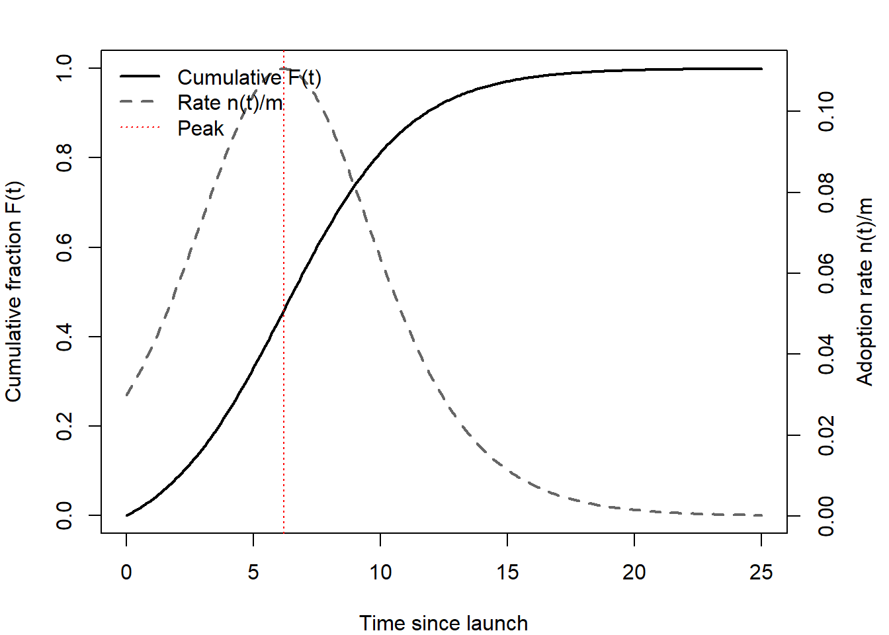
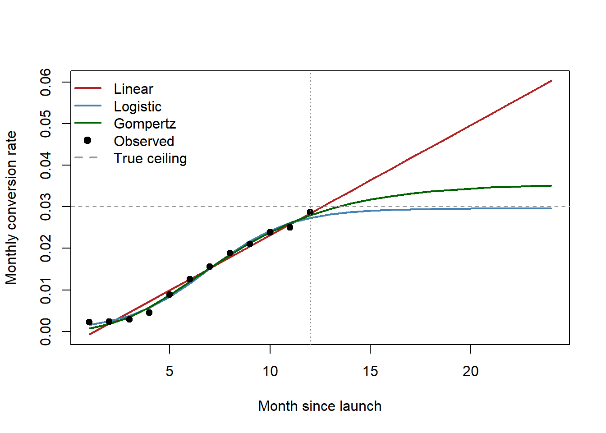

Innovation is the engine of long-run growth in marketing, and it is also one of the field’s hardest objects to measure and to manage. A new product is a bet: the firm commits resources today against an uncertain stream of future demand, and the value of that bet is realized—or destroyed—through the joint behavior of consumers (who must adopt), competitors (who respond), and capital markets (who price the firm’s prospects long before the cash arrives). This chapter treats innovation as the connective tissue between three literatures that are often read separately: the diffusion of new technologies through a population of adopters, the organizational and strategic determinants of who innovates and how much, and the financial valuation of innovation as an intangible asset.
The chapter is organized around the life of an innovation. It begins with diffusion—the canonical models of how an installed base accumulates over time—because diffusion supplies the formal backbone on which forecasting, substitution, and life-cycle tracking are built. It then turns to measurement: how researchers quantify a construct that has no natural unit, leaning heavily on the patent-citation machinery that the empirical literature has standardized. With constructs and measures in hand, it examines the new-product-development (NPD) process inside the firm—teams, capabilities, channels, co-creation, and governance—and the organizational forces (acquisitions, franchising, going public) that expand or erode a firm’s capacity to innovate. It closes with the marketing–finance linkage, where innovation is priced by investors and the construct is finally expressed in returns. Throughout, intuition leads and the formalism follows in full: a reader should leave able to specify a diffusion model, defend a patent-based innovation measure against its known biases, and reason about why markets reward some innovations seven times more than others.
By the end of the chapter the reader will be able to (i) write down and estimate the Bass diffusion model and its successive-generation extension, (ii) construct and critique patent-based innovation measures, and (iii) connect new-product activity to firm value through the event-study logic developed at length in Chapter 24.
26.1 Theoretical Foundations
Before the formal diffusion machinery, it is worth naming the theories that give that machinery its behavioral content. Four strands govern how an innovation spreads and why some spread faster than others.
Diffusion of innovations, in Rogers’s classic synthesis, describes adoption as a process unfolding through communication channels over time across adopter categories: innovators, early adopters, early majority, late majority, and laggards. The Bass model(Bass 1969) is the formal, estimable expression of exactly this idea: its coefficient of innovation \(p\) captures Rogers’s external-influence (media, advertising) channel and its coefficient of imitation \(q\) captures the internal, word-of-mouth contagion among prior adopters, as developed in Equation 26.1. Rogers supplies the sociology; Bass supplies the differential equation.
The technology acceptance model (TAM), Davis’s adaptation of the theory of reasoned action to information technology, holds that adoption intention is driven by two beliefs: perceived usefulness and perceived ease of use. TAM explains adoption at the level of the individual decision that the Bass model aggregates, and it is the microfoundation most often invoked when the innovation is a digital product or platform.
Rogers’s perceived attributes explain the rate of diffusion, that is, why the Bass \(p\) and \(q\) differ so sharply across categories. Five attributes predict adoption speed: relative advantage (the improvement over what it replaces), compatibility (fit with existing values and practices), complexity (inverse ease of understanding and use), trialability (the degree to which it can be experimented with before commitment), and observability (the visibility of its benefits to others). High relative advantage, compatibility, trialability, and observability, and low complexity, accelerate diffusion. These attributes are the behavioral content behind an otherwise atheoretical \(q/p\) ratio.
Network effects modify the diffusion logic for products whose value to each adopter rises with the size of the installed base (communication platforms, standards, marketplaces). Under direct or indirect network externalities the imitation channel is not merely informational but value-creating: each new adopter raises the relative advantage of adoption for everyone else, which steepens the S-curve, can produce tipping and winner-take-most outcomes, and connects diffusion to the platform dynamics treated elsewhere in the book.
26.2 Diffusion of Innovations
Diffusion is the process by which an innovation spreads through a population of potential adopters over time. The central empirical regularity is that cumulative adoption traces an S-curve: slow at first, accelerating as word spreads, then saturating as the pool of non-adopters is exhausted. The modeling task is to give this curve a behavioral micro-foundation so that its parameters carry meaning and can be used for forecasting.
26.2.1 The Bass Model
The workhorse is the Bass model (Bass 1969). Its premise is that the propensity to adopt at time \(t\), conditional on not having adopted yet, is a linear function of how many others have already adopted. Let \(F(t)\) be the cumulative fraction of the market that has adopted by time \(t\), and let \(h(t)\) denote the hazard—the conditional rate of first adoption among those who have not yet adopted. The Bass specification is
where \(f(t) = F'(t)\) is the adoption density. The two parameters carry distinct behavioral content. The coefficient of innovation\(p\) captures the tendency to adopt independently of social influence—external pressure from advertising, media, or intrinsic need—and governs the level of the curve at \(t=0\). The coefficient of imitation\(q\) captures adoption driven by social contagion—word of mouth, observation, network effects—and governs the acceleration once early adopters seed the population. A scale parameter \(m\), the ultimate market potential, converts the fraction \(F(t)\) into a count of adopters \(N(t) = m\,F(t)\).
The Bass model partitions adopters into innovators, who adopt under external influence captured by \(p\), and imitators, whose adoption probability rises linearly with the cumulative number of previous adopters, captured by \(q\)(Bass 1969).
Substituting \(f(t) = h(t)\bigl(1 - F(t)\bigr)\) into Equation 26.1 yields the ordinary differential equation \(f(t) = \bigl(p + qF(t)\bigr)\bigl(1 - F(t)\bigr)\), whose solution under \(F(0)=0\) is the closed form
The non-cumulative adoption rate \(n(t) = m\,f(t)\) is hump-shaped whenever \(q > p\), peaking at \(t^{\*} = \tfrac{1}{p+q}\ln(q/p)\); when \(q \le p\) adoption declines monotonically from launch and the S-curve degenerates. The interior peak is what gives durable-goods sales their characteristic rise-and-fall, and the location of that peak is the quantity managers most want to forecast.
Estimation. The original approach regresses discrete-time adoptions on the installed base. Writing \(n_t = m f(t)\) and \(N_{t-1} = m F(t-1)\), the discretized analogue of Equation 26.1 is the quadratic
which is linear in the composite parameters \(\beta_0, \beta_1, \beta_2\) and can be estimated by ordinary least squares (OLS). The structural parameters are then recovered by inversion: \(m\) solves \(\beta_2 m^2 + \beta_1 m + \beta_0 = 0\) (taking the positive root), \(p = \beta_0/m\), and \(q = -\beta_2 m\). OLS on Equation 26.3 is consistent only under strong assumptions, and three failures of identification recur in practice. First, \(N_{t-1}\) is mechanically correlated with the error \(u_t\) when adoption shocks are serially correlated, biasing the coefficients—maximum likelihood or nonlinear least squares on Equation 26.2 is preferred. Second, the parameters are weakly identified before the sales peak: without observations on both sides of \(t^{\*}\), \(m\) and \(q\) trade off and estimates are unstable, which is why early-life forecasts are notoriously fragile. Third, the basic model assumes a fixed market potential and constant\(p, q\); in reality marketing-mix variables, price declines, and successive product generations all shift these quantities, motivating the extensions below. Figure 26.1 plots the cumulative S-curve alongside the hump-shaped adoption rate it implies.
Code
set.seed(1969)p<-0.03; q<-0.38; m<-1t<-seq(0, 25, by =0.1)F_t<-(1-exp(-(p+q)*t))/(1+(q/p)*exp(-(p+q)*t))f_t<-(p+q*F_t)*(1-F_t)# adoption density n(t)/mt_peak<-log(q/p)/(p+q)op<-par(mar =c(4, 4, 2, 4))plot(t, F_t, type ="l", lwd =2, ylim =c(0, 1), xlab ="Time since launch", ylab ="Cumulative fraction F(t)")par(new =TRUE)plot(t, f_t, type ="l", lwd =2, lty =2, col ="grey40", axes =FALSE, xlab ="", ylab ="")axis(4); mtext("Adoption rate n(t)/m", side =4, line =2.5)abline(v =t_peak, col ="red", lty =3)legend("topleft", legend =c("Cumulative F(t)", "Rate n(t)/m", "Peak"), lty =c(1, 2, 3), lwd =c(2, 2, 1), col =c("black", "grey40", "red"), bty ="n")par(op)

Figure 26.1: Bass diffusion: cumulative adoption F(t) and the hump-shaped adoption rate n(t) for p = 0.03, q = 0.38, m = 1. The adoption rate peaks at the inflection point of the S-curve.
26.2.2 Successive Generations and Substitution
Most durable categories do not diffuse once; they diffuse repeatedly as new technological generations replace old ones (mainframes to minicomputers to PCs; 3G to 4G to 5G). A model of a single generation misattributes the decline of an incumbent technology to saturation when it is in fact substitution. Chandrasekaran, Tellis, and James (2020) develop a successive-generations framework that separates two rates the basic Bass model conflates: the rate at which adopters disengage from an older technology and the rate at which they adopt the newer one. Allowing these to differ is what lets the model fit the empirically observed overlap, in which an older generation is still gaining late adopters even as the newer one accelerates—an overlap a single substitution rate cannot reproduce.
The practical payoff is life-cycle tracking. Meade and Rabelo (2004) review the forecasting toolkit for the technology-adoption life cycle and stress that model choice should follow the data regime: pre-peak data demand methods robust to the weak identification noted above, whereas post-peak data permit richer multi-generation specifications. The diffusion literature thus supplies not a single model but a ladder of models indexed by how much of the life cycle the analyst can observe. Figure 26.2 sketches how each generation carries its own adoption process while a distinct disengagement rate governs substitution.
Figure 26.2: Successive-technology diffusion. Each generation has its own adoption process; substitution is governed by a disengagement rate from the incumbent that is distinct from the adoption rate of the successor.
26.3 Growth Curves Beyond Bass: Trend Extrapolation for a New Channel
The Bass model is one member of a larger family of growth curves, and the family matters whenever the task is not to explain adoption but to project a young, saturating series forward. A new product’s cumulative sales, a technology’s installed base, and—as Kaiser and Schulze (2026) show—a new marketing channel’s conversion rate all trace an S: near-flat at launch, a steepening middle, a plateau as the addressable ceiling binds. The forecasting difficulty is that early data show only the bottom of the S, and the functional form the analyst imposes on the trend, not the data, then decides where the curve is headed. Kaiser and Schulze make the point concrete by projecting organic-LLM referral outcomes under four trend specifications and reporting that the choice “substantially impacts predictions.” Those four specifications are worth stating precisely, because they span the space of sensible answers.
The two linear forms are the null against which the curves earn their keep. A plain linear trend and its centered variant, \[
y_t = \beta_0 + \beta_1 t
\qquad\text{and}\qquad
y_t = \tilde\beta_0 + \beta_1 (t - \bar t),
\tag{26.4}\] fit the identical line—centering shifts only the intercept’s meaning (from the extrapolated value at \(t=0\) to the level at the sample midpoint) and decorrelates intercept from slope, which stabilizes the starting values the nonlinear fits below require. Their shared defect is fatal for a saturating quantity: a straight line has no ceiling. Extrapolated a year past a nascent channel’s data, a linear conversion rate marches past every plausible bound, and a share past 100%. Centering cures none of this; it is a conditioning device, not a model of saturation.
The logistic (sigmoid) curve is the symmetric saturating alternative. It is the solution of the autocatalytic law \(\dot y = \tfrac{k}{L}\,y\,(L - y)\)—growth proportional to both the level attained and the headroom remaining—giving \[
y_t = \frac{L}{1 + \exp\!\big(-k\,(t - t_0)\big)},
\tag{26.5}\] with a hard upper limit\(L\) (the ceiling, imposed a priori or estimated), growth rate \(k\), and midpoint \(t_0\) at which \(y = L/2\). Its inflection sits exactly halfway up, so a logistic rises and levels off as mirror images. The Gompertz curve relaxes that symmetry. It solves \(\dot y = c\,y\,\ln(a/y)\)—growth proportional to the log headroom—so the brake engages later and the approach to the asymptote is slower than the take-off: \[
y_t = a\,\exp\!\big(-b\,\exp(-c\,t)\big),
\tag{26.6}\] with asymptote \(a\), and inflection at \(t = (\ln b)/c\) where \(y = a/e \approx 0.368\,a\), below the logistic’s half-way point—the signature of an asymmetric S-curve(Gompertz 1825). A channel that matures fast then crawls toward its ceiling is Gompertz-shaped; one that accelerates and decelerates evenly is logistic. The data rarely say which until the plateau is in view, and that is the whole problem: before the inflection, market potential and growth rate trade off just as \(m\) and \(q\) do in the Bass model (Equation 26.2), so competing curves fit the observed rise almost equally well while disagreeing sharply about the ceiling. The honest output of an early-life projection is therefore an envelope of forms, not a single line.
Estimation is ordinary least squares for the linear forms and nonlinear least squares for the curves—the same nls machinery used for the cumulative Bass model, with the asymptote and rate given explicit starting values (or supplied by R’s self-start models SSlogis and SSgompertz). Figure 26.3 fits all four to a simulated year of a maturing channel and projects each a year beyond the data.
Code
set.seed(2024)# Twelve months of a new channel's monthly conversion rate, truly approaching a# ceiling of 3% along a logistic path, observed with noise.months<-1:12L_true<-0.030; k_true<-0.55; t0_true<-7cr_true<-L_true/(1+exp(-k_true*(months-t0_true)))cr_obs<-pmax(cr_true+rnorm(12, 0, 0.0012), 1e-4)d<-data.frame(t =months, cr =cr_obs)ctrl<-nls.control(maxiter =200, warnOnly =TRUE)# return a fit rather than abortfit_lin<-lm(cr~t, data =d)fit_cen<-lm(cr~I(t-mean(t)), data =d)# identical fit, centered trendfit_log<-nls(cr~L/(1+exp(-k*(t-t0))), start =list(L =0.03, k =0.4, t0 =7), data =d, control =ctrl)fit_gom<-nls(cr~a*exp(-b*exp(-c*t)), start =list(a =0.03, b =5, c =0.4), data =d, control =ctrl)newt<-data.frame(t =1:24)pr<-sapply(list(Linear =fit_lin, Logistic =fit_log, Gompertz =fit_gom),function(m)predict(m, newdata =newt))matplot(newt$t, pr, type ="l", lwd =2, lty =1, col =c("firebrick", "steelblue", "darkgreen"), xlab ="Month since launch", ylab ="Monthly conversion rate", ylim =range(0, pr, cr_obs))points(d$t, d$cr, pch =19)abline(v =12, lty =3, col ="grey50")abline(h =L_true, lty =2, col ="grey60")legend("topleft", bty ="n", lwd =2, col =c("firebrick", "steelblue", "darkgreen", "black", "grey60"), lty =c(1, 1, 1, NA, 2), pch =c(NA, NA, NA, 19, NA), legend =c("Linear", "Logistic", "Gompertz", "Observed", "True ceiling"))cat(sprintf("Projected CR at month 24 — linear %.3f, logistic %.3f, gompertz %.3f\n",pr[24, "Linear"], pr[24, "Logistic"], pr[24, "Gompertz"]))#> Projected CR at month 24 — linear 0.060, logistic 0.030, gompertz 0.035cat(sprintf("Centered-linear reproduces the linear fit exactly: %s\n",isTRUE(all.equal(unname(fitted(fit_lin)), unname(fitted(fit_cen))))))#> Centered-linear reproduces the linear fit exactly: TRUE

Figure 26.3: Four trend specifications fit to twelve months of a maturing channel’s monthly conversion rate (points), then projected twelve months past the end of the data (dotted vertical line); the dashed horizontal line is the true 3% ceiling. In sample the fits nearly coincide; out of sample the linear trend climbs past any plausible ceiling while the logistic and Gompertz curves saturate—at different levels, which is the weak identification of a pre-inflection series made visible.
The fits are nearly indistinguishable over the twelve observed months yet part company violently once extrapolated: the linear projection sails through the true ceiling while the two S-curves flatten toward different asymptotes. That spread is the forecast uncertainty a single fitted line hides, and it is why fitting the family—and reporting where the members agree and where they diverge—is the disciplined move for any young, saturating series.
The trend-extrapolation discipline
A saturating quantity demands a saturating model. Never linear-extrapolate a rate, a share, or a penetration figure: the linear form has no ceiling and will always, given enough horizon, predict the impossible. Fit at least one symmetric (logistic) and one asymmetric (Gompertz) curve, treat the gap between their projected asymptotes as the honest forecast interval, and distrust any point forecast made before the series has shown its inflection—the region where, exactly as in the Bass model, the ceiling and the growth rate are only weakly separated by the data.
These curves are the reduced-form cousins of the Bass model of Section 26.1. Where Bass decomposes the S into interpretable innovation and imitation rates (Equation 26.1), the logistic and Gompertz fit the shape directly, which is the pragmatic choice when only cumulative levels are observed and no adopter-level story is needed. Kaiser and Schulze (2026) turn exactly this apparatus on a marketing channel rather than a product—projecting how fast LLM referral converges toward established channels— and pair it with the overdispersed rate model of Section 67.7 to keep the inference honest on sparse data. Diffusion logic, it turns out, describes the maturation of marketing infrastructure as readily as the adoption of the products that flow through it.
26.4 Earned Media and the Local Diffusion of a Green Innovation
Bass and its descendants put the diffusion mechanism inside the consumer population: imitation is contagion among adopters. For a great many products that is only half the story, because the consumer cannot adopt until a local business decides to carry the thing. Plant-based meat is the clean case. A household’s willingness to try an Impossible burger is irrelevant in a county where no restaurant puts one on the menu, so the object to be explained is a supply-side adoption decision by thousands of small, independent merchants—each of whom faces a fixed cost of menu redesign, supplier onboarding, and staff training, and each of whom is guessing at local demand.
Xu, Guo, and Xu (2026) study exactly this margin for plant-based (“impossible”) meat over 2015–2019, and their first contribution is a measurement one. There is no registry of which restaurants and stores carry the product, so they construct a location-specific adoption metric from the merchants’ own social-media announcements—the post that says the burger is now on the menu—which turns an unobservable rollout into a county-quarter panel. The substantive question is then whether local news coverage of the product causes these merchants to adopt it.
The obstacle is that coverage is not assigned at random. Editors write about what their audience already cares about, so a county with latent enthusiasm for green food generates both more column inches and more adoption; and once a few restaurants adopt, that itself becomes local news. Coverage and adoption are jointly determined by an unobserved local taste, and reverse causality runs alongside it. The authors’ answer is to instrument coverage with quasi-random variation in county-quarter news production across topics. Local news space is a rivalrous resource: an outlet has a fixed number of slots per quarter, so a flood of unrelated newsworthy events crowds the focal topic out, while the producer’s own national news flow pushes it in. This is the news-crowd-out logic of Eisensee and Strömberg (2007), refined to the county-quarter-topic cell and resting on the local-press-supply tradition of Snyder and Strömberg (2010). The topic decomposition is what makes the exclusion restriction credible: the identifying variation comes predominantly from news about the producer’s financials—funding rounds, valuations, earnings—which is generated in corporate boardrooms and financial markets, not by editorial interest in the county’s food scene, and which has no plausible direct channel to a local restaurateur’s menu except through the coverage itself.
flowchart LR
F["Producer's national\nfinancial news flow\n(funding, valuations, earnings)"]
O["County press capacity\n(outlets, newsroom size)"]
X["Rival-topic news pressure\n(crowd-out of the news hole)"]
N["Local coverage of\nthe green product"]
A["Local merchant adoption\n(menu / shelf announcements)"]
T["Unobserved local\ntaste for green food"]
L["County ideology\n(liberal vote share)"]
F --> N
O --> N
X -- "crowds out" --> N
N --> A
T -. "confound" .-> N
T -. "confound" .-> A
A -. "reverse causality" .-> N
L -- "moderates" --> A
Figure 26.4: Identifying the effect of local news on local adoption. The unobserved local taste for green food (dashed) confounds coverage and adoption in both directions. The two news-supply shifters enter only through coverage: the producer’s national financial news flow, scaled by the county’s press capacity, and crowd-out from rival topics competing for the same finite news hole.
Three results carry beyond the setting. First, local coverage does raise adoption by restaurants and stores, and the magnitude is of the same order as what packaged-goods firms buy with television advertising—except that it is earned, which reframes public relations from a reputational function into a distribution-building one. Second, the effect is markedly stronger in liberal-leaning counties. Green-product diffusion is therefore spatially sorted by ideology and not only by the usual income and density gradients, echoing the finding that political identity conditions the appeal of environmental attributes even when the private economics are held fixed (Gromet, Kunreuther, and Larrick 2013). A national average effect is a weighted mixture over a politically partitioned map, and a rollout plan built on that average will systematically over-invest in one half of the country and under-invest in the other. Third—and this is the methodological payoff—the topic composition of news is information, not nuisance. Decomposing coverage by topic told the authors which slice of the variation was doing the identifying work, and that slice is the one whose exclusion restriction can be argued from institutional detail.
The replication below builds the confound deliberately, then removes it. A panel of counties over twenty quarters carries an unobserved green-taste shock that raises both coverage and adoption; coverage is additionally moved by two supply-side shifters that have no business in the adoption equation. Ordinary least squares with county and quarter fixed effects cannot rescue the estimate—the confound varies within county over time—while two-stage least squares on the news-supply instruments recovers the truth. The last block interacts the endogenous regressor with county ideology, using interacted instruments, to recover the political moderation.
Code
set.seed(404)library(fixest)# --- A county-quarter panel of local-business adoption ------------------------n_cty<-400; n_qtr<-20cty<-rep(seq_len(n_cty), each =n_qtr)qtr<-rep(seq_len(n_qtr), times =n_cty)N<-n_cty*n_qtr# County traits, both time-invariant: liberal vote share and local press capacity.lib<-rep(plogis(rnorm(n_cty, 0, 0.8)), each =n_qtr)outlets<-rep(exp(rnorm(n_cty, 0, 0.5)), each =n_qtr)# Two exogenous shifters of local news SUPPLY, neither of which belongs in the# adoption equation:# (1) the producer's national financial news flow (funding rounds, earnings),# which reaches a county in proportion to its press capacity;# (2) crowd-out -- unrelated topics competing for the same county-quarter news hole.fin_national<-rep(rnorm(n_qtr, 0, 1), times =n_cty)z_fin<-scale(log(outlets)*fin_national)[, 1]z_crowd<-scale(rgamma(N, shape =2, scale =1))[, 1]# The confound: unobserved local taste for green food, which moves BOTH the# editor's willingness to cover the product AND the merchant's willingness to stock it.taste<-0.6*scale(lib)[, 1]+rnorm(N, 0, 1)# Observed local coverage of the product: the endogenous regressor.news<-0.75*z_fin-0.35*z_crowd+0.50*taste+rnorm(N, 0, 0.5)# Adoption: local restaurants and stores announcing the product this quarter.beta_main<-0.25# true average effect of coveragebeta_lib<-0.60# true extra effect per unit of (demeaned) liberal sharealpha_c<-rep(rnorm(n_cty, 0, 0.7), each =n_qtr)tau_t<-rep(rnorm(n_qtr, 0, 0.4), times =n_cty)lib_c<-lib-mean(lib)adopt<-(beta_main+beta_lib*lib_c)*news+alpha_c+tau_t+0.8*taste+rnorm(N, 0, 0.8)d<-data.frame(adopt, news, lib_c, z_fin, z_crowd, cty, qtr)# --- (1) OLS with county and quarter fixed effects: still confounded ----------m_ols<-feols(adopt~news|cty+qtr, data =d)# --- (2) 2SLS: instrument coverage with the two news-supply shifters ----------m_iv<-feols(adopt~1|cty+qtr|news~z_fin+z_crowd, data =d)# --- (3) Which instrument does the identifying work? --------------------------Fstat<-function(m)fitstat(m, "wf")$wf$statf_fin<-feols(news~z_fin|cty+qtr, data =d)f_crowd<-feols(news~z_crowd|cty+qtr, data =d)# --- (4) Ideology heterogeneity: two endogenous terms, two interacted instrumentsm_het<-feols(adopt~1|cty+qtr|news+news:lib_c~z_fin+z_crowd+z_fin:lib_c+z_crowd:lib_c, data =d)cat(sprintf("True average effect of coverage : %.3f\n", beta_main))#> True average effect of coverage : 0.250cat(sprintf("OLS, county + quarter FE : %.3f\n", coef(m_ols)["news"]))#> OLS, county + quarter FE : 0.577cat(sprintf("2SLS, news-supply instruments : %.3f (SE %.3f)\n",coef(m_iv)["fit_news"], se(m_iv)["fit_news"]))#> 2SLS, news-supply instruments : 0.228 (SE 0.016)cat(sprintf("First-stage F -- producer financials : %.0f\n", Fstat(f_fin)))#> First-stage F -- producer financials : 7208cat(sprintf("First-stage F -- rival-topic crowd-out : %.0f\n", Fstat(f_crowd)))#> First-stage F -- rival-topic crowd-out : 748cat(sprintf("True ideology interaction : %.3f\n", beta_lib))#> True ideology interaction : 0.600cat(sprintf("2SLS ideology interaction : %.3f (SE %.3f)\n",coef(m_het)["fit_news:lib_c"], se(m_het)["fit_news:lib_c"]))#> 2SLS ideology interaction : 0.666 (SE 0.092)
Fixed effects absorb the level of a county’s enthusiasm and the national trajectory of the category, and they still leave the OLS coefficient at roughly twice the truth, because the taste shock that drives coverage moves quarter by quarter inside the county. Two-stage least squares on the two news-supply shifters lands on the true parameter, and the first-stage diagnostics reproduce the paper’s finding that producer-financial news carries the identification: it is by far the stronger instrument, and it is also the one whose exclusion restriction survives an institutional argument. The interacted specification then recovers the ideology moderation, which is the practical output—it converts a single national elasticity into a map.
Two cautions travel with the design. The instruments are only as good as the claim that national corporate news reaches a county solely through the local news hole; if the same funding round moves the supplier’s wholesale terms or the parent chain’s national menu policy, the exclusion restriction fails and no first-stage F will reveal it. And because the estimate is a local average treatment effect, it is identified off merchants whose adoption decision is responsive to coverage—plausibly the undecided middle, not the committed early adopters that a Bass model’s innovation parameter is meant to capture. The two frameworks are complements: Section 26.1 characterizes the shape of the curve, this design identifies what moves it.
26.5 Measuring Innovation
Innovation has no natural unit, so every empirical claim about it rests on a constructed measure, and the credibility of the claim is only as strong as the measure’s construct validity. Three families dominate. Input measures (R&D expenditure) capture effort but not outcome and are reported inconsistently across firms. Output measures based on new-product introductions—drawn from commercial databases such as product-launch analytics (Wies, Moorman, and Chandy 2023)—capture commercialized innovation but miss the upstream invention that precedes it. Patent-based measures sit between input and market outcome and have become the field’s default because patents are dated, classified, linked to assignees, and connected to one another through citations.
26.5.1 Patent Counts and Their Truncation Problems
The canonical pipeline, exemplified by Chang and Wu (2021), draws granted-patent records (historically from the NBER patent database covering U.S. Patent and Trademark Office grants) and proxies a firm’s annual innovation by two quantities: the count of patents the firm applied for in a year and ultimately had granted, and the citations those patents subsequently receive. Two measurement decisions are load-bearing. First, patents are dated by application year rather than grant year, because application date is closer to the moment of inventive activity. Second, both measures are logged to tame the heavy right tail of the patent distribution.
Two truncation biases must be corrected or the estimates are not interpretable. The application–grant lag truncates recent application years (patents applied for late in the sample have not yet been granted), so the sample is typically ended a few years before the data cutoff. The citation-accumulation lag truncates forward citations for recent patents (they have had less time to be cited), which is addressed with technology-class-by-year fixed effects that net out the systematic component of citation timing. These are not cosmetic adjustments: without them, a spurious downward trend in innovation appears at the end of every sample.
26.5.2 Backward Citations: Novelty
A patent cites prior art. The backward citations a patent makes—the patents it builds on—index how much existing knowledge it recombines, and thus inversely index its novelty.
Citing propensity is defined as the average number of backward citations excluding citations to public research per patent; it reflects a firm’s overall level of citing (Roach and Cohen 2013, 512).
Chandy et al. (2006) use the same logic at the patent level: novelty is measured by the number of backward citations a patent makes, with higher backward citations implying lower novelty, on the reasoning that an idea drawing heavily on existing patents is by construction less of a departure from what came before. Backward counts are available at application time, which makes them attractive as an ex ante measure—unlike the forward citations discussed next.
26.5.3 Forward Citations: Importance
The forward citations a patent receives—later patents that cite it—index its downstream influence, and the literature treats them as the best available proxy for the importance or quality of an invention rather than its mere volume. Tellis, Prabhu, and Chandy (2009) and Cao et al. (2023) both weight patents by forward citations on precisely this ground, and Ahuja and Morris Lampert (2001) operationalize breakthrough inventions as the top 1% of patents by citation weight within their application year. The external validity of the measure is anchored by Trajtenberg (1990), who shows that the more citations a CT-scanner patent receives, the higher its correlation with the technology’s realized improvement surplus—a rare direct link between a citation count and an independent welfare measure (Lampe and Moser 2016). Chandy et al. (2006) summarize idea importance as the total forward-citation count for a patent.
Forward citations have well-understood virtues and a sharp limitation, which the following table organizes.
Table 26.1: Forward versus backward patent citations as innovation measures
Property
Forward citations
Backward citations
Construct measured
Importance / quality / influence
Novelty (inverse)
Timing
Ex post (accrue after grant)
Ex ante (fixed at application)
Manipulability by firm
Low—examiners verify prior art; over-citing narrows own scope
Higher—applicants control what they cite
Principal bias
Right-truncation: older patents accrue more citations
Less time-sensitive
Standard fix
Long window (≈17+ yrs) or class-year fixed effects
—
As Table 26.1 records, the chief threat to forward-citation measures is temporal: because citations accrue over time, older patents mechanically look more important. The standard remedy is a citation window long enough—on the order of seventeen years or more—that the bias from differential accumulation is negligible, supplemented by the class-year fixed effects noted above. The ex post nature of the measure remains a genuine caveat: forward citations cannot recover the importance an inventor or investor could have perceived at the time of patenting, which is exactly the quantity a forward-looking valuation would want. Galasso and Simcoe (2011) exploit this measurement apparatus to study how managerial risk exposure shapes the quantity and the citation-weighted quality of innovation.
26.5.4 Measuring Creativity with Embeddings
Patent measures capture firm invention, but most consumer creativity leaves no patent and no citation trail: a recipe, a playlist, a graphic-design template, an outfit. Representation learning fills the gap. Sozuer, Netzer, and Krstovski (2026) learn an ingredient embedding—each ingredient’s vector inferred from the company it keeps across more than 57,000 recipes, the same representation-learning idea as the product embeddings of Section 67.4.1 applied to a dish’s components—and from that geometry read two properties of a recipe: its fit (how coherently its ingredients belong together) and its novelty (how unusual its ingredients are for its category). The measure needs no expert taster and no citation graph; it recovers creativity from the statistics of recombination, exactly as the backward citations above recover a patent’s novelty from the prior art it recombines.
The payoff is a result that complicates the folklore that creativity is uniformly rewarded. High ingredient fit lifts both trial and ratings, but unique ingredients cut trial while raising ratings among those who do try—novelty carries an adoption cost and a quality dividend at once. The recipe that wins is therefore not the most novel but the most balanced: novel in its parts, coherent as a whole. This is the innovation-side echo of the atypicality-and-engagement result in social content (Section 18.2)—distinctiveness pays, but only when it stays legible against a familiar ground—and it turns the embedding from a descriptive gauge into a design tool: the authors build a generator that proposes adding, dropping, or swapping an ingredient to move a recipe toward that balanced-creativity frontier.
The measurement move here—define a construct, operationalize it as a geometric property of a learned embedding, validate it against outcomes it was not fit to, and end in a tool rather than a coefficient—recurs across the creator economy. Its pricing counterpart is Sikdar, Chakraborty, and Dogonadze (2026), who fuse a listing’s structured attributes, photographs, and text to tell a novice artist what to charge and how long the work will take to sell (Section 54.5.1). Both study creators without institutional credentials, both let a learned representation stand in for the expert judgment such creators cannot buy, and both are careful to remain associational: the creator chooses the artifact and its description jointly, so the representation is entangled with the unobserved skill that also drives success. The general statement of that template, and the conditions under which reading a representation is measurement rather than the interpretability error, is in Section 67.5.1.
26.6 New Product Development
A diffusion curve and a patent count describe innovation from the outside. Inside the firm, innovation is produced by new-product-development processes whose design—who is on the team, what information they have, how decisions are made—shapes whether the resulting product is innovative enough to survive. The recurring finding is that NPD outcomes are contingent: capabilities and team structures have value not in the abstract but conditional on the informational and competitive environment.
26.6.1 Capabilities, Teams, and the Information Environment
Moorman and Slotegraaf (1999) advance a contingency view of NPD capability. Rather than asking whether technological and marketing capabilities raise performance on average, they ask when: the informational content of the external environment modulates how firms deploy their capabilities, affecting both the magnitude and the pace of product development. The value of a capability, on this account, lies in its adaptive deployment against environmental cues, not in its mere existence—a theme that recurs across the NPD literature.
Team composition is the next lever. Sethi, Smith, and Park (2001) study cross-functional NPD teams and locate the primary cause of new-product failure in a lack of innovativeness, defined as the delivery of uniquely meaningful benefits. Innovativeness rises with a strong superordinate team identity, encouragement to take risks, customer influence, and active senior-management monitoring—but it falls with high social cohesion, because cohesive teams suppress the dissent that generates novel options. The interactions are as important as the main effects: the benefit of a superordinate identity is amplified by risk encouragement and damped by social cohesion, while functional diversity per se does not move innovativeness. The emphasis on risk encouragement echoes a robust finding from the creativity literature, that the expectation of evaluation lowers creative output (Amabile, Goldfarb, and Brackfleld 1990): teams that anticipate being judged retreat to safe, conventional options, which is precisely the suppression of novelty that undermines innovativeness. Rebecca J. Slotegraaf and Atuahene-Gima (2011) add a temporal dimension, showing that the relationship between team stability and the comprehensiveness of decision making is curvilinear—too little stability fragments knowledge, too much breeds complacency—and that decision comprehensiveness improves new-product advantage, especially at its upper range.
A structural caution runs through this literature. Grewal et al. (2013) show that the often-mixed findings on how market orientation interacts with the environment can reflect unobserved heterogeneity: estimating finite-mixture (latent-class) regressions reveals multiple regimes with different effect signs, so that pooled estimates suffer aggregation bias. The methodological lesson generalizes—latent heterogeneity in firms’ innovation responses can masquerade as a null or unstable average effect, and disaggregated estimation is the corrective.
26.6.2 Channels, Co-creation, and Forecasting
NPD does not end at the factory gate. Luo, Kannan, and Ratchford (2007) examine new-product development under the constraint of channel acceptance, recognizing that a product that retailers will not stock cannot diffuse regardless of consumer appeal. Ho-Dac, Kumar, and Slotegraaf (2020) study continuous-improvement products (CIPs)—products engineered for post-purchase improvement rather than full replacement—and show that sharing development-progress information raises adoption of the current version, mediated by consumers’ perception of the developer’s commitment to ongoing improvement and moderated by product familiarity. Disclosure, in other words, is itself a marketing instrument.
Co-creation has a demand-side counterpart that the firm-side literature sometimes skips: whether consumers actually value the output. Schreier (2006) measures the willingness-to-pay increment for mass-customized over standard products and finds it substantial but heterogeneous, which is what makes customization a segmentation decision rather than a universal upgrade. Where the firm solicits ideas rather than configurations, the design of the solicitation dominates the volume of it: Toubia (2006) shows that incentive schemes rewarding others’ use of an idea, rather than the idea itself, raise both the quantity and the creativity of what is submitted.
Two comparative studies bound how far any of this generalizes. Song and Parry (1997) compare NPD practices across nations and find the practice–performance links are not invariant, and Nijssen et al. (2006) show that product and service innovation differ enough in their antecedents that a single NPD framework applied to both will mis-specify one of them. On the organizational antecedent, Han, Kim, and Srivastava (1998) ask whether the market orientation–performance link is mediated by innovation rather than direct — the answer largely determining whether a firm should invest in listening or in building.
On the demand-sensing side, Kim and Slotegraaf (2016) challenge the static view of consumer co-creation. Their concept of brand-embedded interaction—dynamic, personalized engagement that steers consumers toward ideas satisfying both their own needs and the brand’s aspirations—yields more constructive NPD ideas in two Twitter-based quasi-field experiments than passive solicitation does. Co-creation quality, that is, is endogenous to how the firm structures the interaction.
Forecasting a durable good before launch is the hardest demand-sensing problem, because there is no sales history to extrapolate. Harz, Hohenberg, and Homburg (2021) deploy virtual reality (VR) for prelaunch sales forecasting of durables, arguing that VR’s visualization capability (simulation scope, similarity to reality, immersion) and automated-tracking capability (interactivity) induce behavioral consistency between participants’ information search, stated preferences, and purchase behavior. The forecasting backbone is the macro-flow model (Figure 26.5), which projects new-product sales over time by specifying a set of behavioral states (awareness, preference, purchase), the flows between them, and the determinants of those flows (Urban, Hauser, and Roberts 1990). Harz, Hohenberg, and Homburg (2021) extend this model with VR-derived virtual purchases and third-party awareness inputs and find improved accuracy—after adjusting for advertising—at both aggregate and individual levels, with presence and vividness as the operative psychological mechanisms.
flowchart LR
A["Aware"] -->|"info search"| K["Knowledgeable /<br/>Preference formed"]
K -->|"intend"| I["Purchase intent"]
I -->|"trial / virtual purchase"| P["Purchase"]
P -->|"satisfaction"| R["Repeat / WOM"]
R -.->|"contagion"| A
Figure 26.5: The macro-flow model underlying prelaunch forecasting: consumers flow through behavioral states, and the model estimates the determinants of each transition. Virtual-reality simulations supply the flow inputs before launch (Urban, Hauser, and Roberts 1990; Harz, Hohenberg, and Homburg 2021).
26.6.3 Governance and Organizational Structure
Innovation is governed from the top of the firm. R. Srinivasan, Wuyts, and Mallapragada (2018) study board interlock centrality—how connected a firm’s directors are to other boards—and find it raises incremental new-product introductions by channeling market intelligence into the firm; the effect strengthens with internal and marketing leadership on the board and with a CEO of marketing background, and weakens under pronounced intra-industry external leadership. You et al. (2020) push the upper-echelons logic further, showing that CEO and CMO characteristics—personality, demographics, experience, values—shape both innovation and the stock returns it generates. At the front end of strategy, Molner, Prabhu, and Yadav (2018) show that managers’ market- scoping mindset conditions which markets an innovation reaches: ambiguity avoidance pulls managers toward a downstream, end-user orientation that courts commercialization failure, whereas ambiguity acceptance fosters an upstream orientation that uncovers viable market spaces.
26.6.4 Generative AI in the Front End: Effort Saved Is Not Creativity Gained
The front end of the funnel above is where generative AI has been adopted fastest, on the reasoning that turning a vague idea into a developed concept is laborious and the labor can be offloaded. Gordetzki et al. (2026) test that reasoning and find it backwards in an instructive way.
In an online experiment, 276 participants refined ideas for an innovation challenge either alone, with AI-generated text, or with AI-generated images. Image-based support did what it was supposed to do on the effort margin: it significantly reduced effort relative to both working alone and text-based support. It also produced ideas that were 18% less creative than those from the more effortful text-based support. The explanation is about what each format leaves undone. An image specifies every detail of a concept, and a fully specified concept leaves the human nothing to complete. Text leaves gaps, and filling gaps is effortful precisely because it is generative. The effect is moderated by how far the idea has already been developed: textual input helps most when the concept is already mature, because there is enough structure for the human’s completions to attach to.
The result should be read as a claim about agency configuration rather than about model quality—the question is how much of the concretization work the tool takes over, not how good the tool is. That reframing matters for NPD practice because it makes the design variable something a manager controls. It also supplies a caution for the measurement discussion in Section 26.5: an ideation tool evaluated on throughput or on time-to-concept will score the image condition best, and an evaluation restricted to those metrics would recommend exactly the configuration that degrades the output the process exists to produce.
26.6.5 Quality Without Variety: The Diversity Cost of LLM Ideation
The companion question is what happens when the model is asked to generate the ideas rather than help concretize them, and there the accounting runs the other way: the per-idea numbers look excellent and the portfolio numbers do not. Terwiesch et al. (2026) run eight studies on one tightly bounded ideation task—a new physical product for the U.S. college-student market retailing under $50—chosen because it is the challenge format long used in product-design courses, so a large pool of pre-LLM human ideas exists for comparison. Idea quality is measured as this literature has long measured it: average purchase intent elicited from target-market consumers, the best available single-number predictor of an idea’s eventual value.
On that metric the LLM wins outright. LLM-generated ideas have higher average quality than human ideas and are seven times more likely to land in the pooled top decile, and a second study rules out the obvious deflationary explanation—that the model is merely writing better sales copy around equally good ideas. The weakness appears only when the unit of analysis moves from the idea to the set: AI ideas are less novel individually and, more consequentially, less diverse collectively. A fifth study re-analyzes prior LLM creativity experiments and finds the same diversity shortfall in every one, which upgrades the result from an artifact of one prompt to a property of the generator.
That ordering—quality up, diversity down—matters more than either finding alone because of what an idea pool is for. A tournament does not consume the mean of its pool; it consumes the maximum, and the expected maximum of a sample rises with dispersion as well as with location. A generator that shifts the quality distribution rightward while compressing its spread, and while concentrating the draws in one region of the idea space, can dominate on every per-idea metric and still yield a worse best idea, because the search has been narrowed. The measurement lesson is the one Section 26.5.4 makes with patent text: novelty and diversity are set-level quantities that no average of item-level scores recovers, so an evaluation reporting only mean purchase intent is structurally blind to the cost being incurred.
The remaining studies buy the variance back, and in doing so establish that the shortfall is a configuration problem rather than a hard ceiling. Newer model versions generate more diverse sets than older ones but still fall short of human sets. Three interventions close most of what remains: pooling ideas across vendors, so that one model’s training idiosyncrasies do not define the search; prompt engineering— chain-of-thought, and injecting heterogeneous personas or constraints, each of which pushes the sampler off its modal completion; and creative agents instructed to explore the solution landscape deliberately. A final study exploits the economics directly: because the marginal cost of one more AI idea is near zero, simply generating far more of them steadily improves coverage of the idea space and approaches human-level coverage. For an innovation manager the synthesis is that the human pool is less a diversity benchmark to be matched by a cleverer prompt than a coverage target that can be purchased with scale, heterogeneity, or both.
Read alongside Gordetzki et al. (2026), the two results point at the same design variable from opposite ends of the front end. Concretization support degrades creativity by leaving the human nothing to complete; generation support degrades diversity by leaving the search nothing to explore. In both cases the metric that would have caught the problem—effort in one, set-level coverage in the other—is the first one a throughput-oriented evaluation drops.
26.7 Organizational Determinants of Innovation
Beyond the project and the boardroom lies the question of which organizational arrangements expand or erode a firm’s stock of innovative capacity—what several authors call its innovation base, the accumulated inventions, ideas, and discoveries that propel future innovation.
26.7.1 Acquisitions and the Innovation Base
The evidence on whether acquisitions help or harm innovation is genuinely mixed, and the resolution is conditional. Hitt et al. (1991) document a negative average effect: acquisition activity reduces R&D inputs and outputs, including patent counts, as managerial attention and capital are absorbed by integration. Mishra and Slotegraaf (2013), analyzing 352 firms across five industries over seventeen years, qualify this: firms that acquire build a more robust innovation base than those that do not, but the benefit depends on the type of acquisition—vertical (across supply-chain stages) versus horizontal (same stage, similar chains)—and, critically, on the breadth of knowledge in the acquiring firm, which determines whether either acquisition type actually enriches the base. King, Slotegraaf, and Kesner (2008) reconcile the two by emphasizing resource interactions: acquisitions raise performance only when target and acquirer resources are complementary. Marketing–technology complementarity (strong-marketing acquirer, strong-technology target) creates value, whereas technology–technology overlap is substitutive and can destroy it. The apparent contradiction in the literature thus dissolves into a moderation structure—average effects are uninformative when complementarity varies across deals.
26.7.2 Firm Boundaries: Franchising and External Knowledge
Firms also reshape their innovation capacity by reconfiguring their boundaries. Mallapragada and Srinivasan (2017) study franchising as such a lever, using panel data on 38 U.S. restaurant chains (1992–2005) and a nonlinear seemingly-unrelated- regression model. They find a positive relationship between franchising emphasis and product innovativeness that intensifies under high financial leverage and weakens under high slack resources, with a parallel but distinctly moderated pattern for process innovativeness. Franchising, on this evidence, is a conditional substitute for alliances and joint ventures in shaping innovation outcomes.
Knowledge also enters the firm through less formal channels. Baruffaldi and Poege (2024) show that firms learn at scientific conferences, especially when they engage intensely through both sponsorship and scientific contribution. Using direct flights as an instrumental variable for attendance—an instrument that shifts the cost of attending without plausibly affecting innovation through other channels—they find that co-attendance with other scientists raises the likelihood of leveraging external knowledge and of future collaboration, with learning skewed toward prominent firms and scientists. The instrument is what makes the learning claim causal rather than merely correlational: firms that attend more conferences differ in unobservable ways from those that do not, and direct flights break that confound.
26.7.3 Opening the Boundary: Open-Source Product Development
The franchising and conference channels move knowledge toward a firm that still owns the development process. Open-source product development dissolves that ownership: the firm builds its product in public on a social coding platform such as GitHub, and outside volunteers commit code alongside its own employees. Whether that openness pays is a question about the firm’s income statement, not about community goodwill, and Singh et al. (2026) answer it with a panel of 977 U.S. high-tech firms observed from 2001 to 2025. Firms that adopt open-source product development realize, on average, a 4–5% increase in gross margin, an estimate that survives staggered difference-in-differences, generalized synthetic control, instrumental-variable, and dynamic-panel specifications (Chapter 42)—four designs with different identifying assumptions converging on the same magnitude, which is what makes the result hard to dismiss as an artifact of any one of them.
The interesting content is in the mechanism and its limits. Framing open source as distributed knowledge integration in the knowledge-based view of the firm, the authors decompose more than 323,000 project-level contributions across over 44,000 repositories into internal employee and external volunteer sources, and show that labor productivity partially mediates the margin effect: outside expertise enlarges the pool of specialized knowledge applied to the product without a commensurate rise in the wage bill. But the mediated path is not always positive. The indirect effect turns discernibly positive only past a threshold of roughly 35% external volunteer contribution—below it, the firm is paying the coordination and review costs of openness without importing enough outside knowledge to cover them. A configurational analysis then adds a second condition: R&D intensity is present in every high-profitability configuration, the absorptive capacity required to metabolize externally sourced knowledge. That is the same conditional logic as the acquisitions literature above, in a different guise—openness, like acquisition, is not an average effect but a complementarity, and a firm without internal R&D has no organ with which to digest what the crowd contributes.
26.7.4 Inventor Job Security and the Direction of Invention
Organizational arrangements shape not only how much a firm invents but what kind of invention it gets, and the mechanism can run through a single employment term. The intuitive prediction is that protecting inventors from dismissal buys exploration: an inventor who cannot be fired for a failed project has the safety net that risky, distant search requires. Wehrheim, Melero, and Palomeras (2026) test that prediction against the staggered adoption of wrongful-discharge laws across U.S. states between 1980 and 1999, using matched employer–employee data built from patent records and a difference-in-differences design on the cross-state timing. The prediction fails, and the reason is instructive. Job security does not primarily change an inventor’s tolerance for failure; it changes the expected length of the relationship, and a longer expected tenure raises the return to investing in firm-specific technological knowledge over generally portable knowledge. Under stronger protection, inventors produced patents drawing more heavily on their own firm’s technologies, less novel by the backward-citation logic of Section 26.5, and of higher private value to the employer.
The result is a clean case of the private–social wedge that runs through this chapter’s measurement discussion. Every outcome improved from the employer’s ledger; the novelty of the technological frontier did not. It also sharpens what “organizational determinant” means. The wrongful-discharge laws were labor policy, written about dismissal and evaluated on employment, and their measurable consequence landed on the composition of the patent stock—an untargeted margin of exactly the kind Chapter 69 is about. A firm that wants exploration from a protected workforce has to buy it with something other than protection, because protection is an incentive to specialize.
26.7.5 Dominance, Radicalness, and the Competition–Innovation Curve
Who produces radical innovation—and who profits from it? Sorescu, Chandy, and Prabhu (2003) find that dominant firms introduce fewer radical innovations than non-dominant firms, that the financial rewards to radical innovation vary enormously across firms and are tied to the resource base, and that firms with deeper marketing and technology support and broader product portfolios extract more value from the radical innovations they do produce. The relationship between competition and innovation is itself non-monotonic: Aghion et al. (2005) establish an inverted-U, in which innovation is highest at intermediate product-market competition—too little competition removes the spur to innovate, too much removes the rents that reward it.
The contrast between dominant and entrant innovators is sharpened by what happens to a firm’s innovation after it goes public. Wies and Moorman (2015) show that following an initial public offering (IPO), firms raise their innovation levels—they innovate more—but the innovations become less risky, with fewer breakthroughs, as the discipline of public markets tilts the portfolio toward incremental safety. This post-IPO retreat from radicalness is the empirical hinge connecting the organizational and financial halves of the chapter.
26.8 Innovation and Firm Value
Innovation is ultimately an intangible asset, and capital markets price it. The marketing–finance literature—developed in full in Chapter 24—asks how investors value innovation activity and treats the question with event-study and asset-pricing machinery rather than survey scales.
26.8.1 How Markets Price New-Product Activity
S. Srinivasan et al. (2009) provide the foundational empirical link between product innovation, marketing investment, and stock returns. Their headline magnitudes are striking and worth stating precisely: investors react far more favorably to pioneering innovations than to minor updates—on the order of seven times greater—and the advertising support behind pioneering innovations is roughly nine times more effective in moving returns. Perceived product quality raises returns, while price promotions lower them, plausibly because a promotion signals weak underlying demand. The asymmetry between pioneering and incremental innovation is the financial counterpart to the radical-versus-incremental distinction in Sorescu, Chandy, and Prabhu (2003).
The effect of innovation on sales is itself conditioned by brand assets. Rebecca J. Slotegraaf and Pauwels (2008) show that the permanent and cumulative sales effects of product introductions are larger for brands with higher equity and more frequent releases, while lower-equity brands benefit more from each individual introduction—a substitution between brand stock and product flow. Collaboration timing also moves markets: Q. Wu et al. (2015) analyze 831 announcements of horizontal collaborations (partnering with competitors for NPD) over twelve years and find that markets react positively to collaboration at the initiation phase but negatively during development and commercialization, with the new product’s innovativeness and the partner’s relative strengths providing asymmetric moderation.
26.8.2 Innovation Signaling at the IPO
Innovation is informative precisely when information is scarcest—at the IPO, when outside investors know least about firm quality. Cao et al. (2022) show that firms deploy their innovation potential as a credible quality signal at IPO: innovation potential is positively associated with the IPO’s initial value and first-day returns and negatively associated with the extent of insider share sales. The components differ in what they signal—patents weigh most heavily on insider selling, while preannouncements move first-day returns most—consistent with a signaling logic in which costlier, harder-to-fake signals (granted patents) carry the most weight where credibility matters most.
26.8.3 Sustaining Innovation After the IPO
The post-IPO innovation decline documented by Wies and Moorman (2015) raises the question of what can arrest it. L. Wu, Lou, and Hitt (2024) examine the role of AI analytics in sustaining post-IPO innovation, analyzing patent data from over 1,000 publicly traded firms. Firms that acquire AI-analytics capabilities after their IPO suffer a smaller decline in innovation quality, with the effect concentrated in machine-learning capabilities specifically. The mechanism is recombination: sustained innovation is driven by the ability to recombine existing technologies into new ones—exactly the backward-citation logic of Section 26.5—and AI analytics supports that recombination. It mitigates two of the three classic barriers to post-IPO innovation—short-term financial pressure and disclosure requirements (with the disclosure benefit largest for firms with long product cycles)—while doing little for managerial-incentive problems. The broader lesson is that technology is itself an input into the production of innovation, and that firms and investors can partially offset the predictable post-IPO innovation slump by investing in it.
26.9 Key Takeaways
Diffusion is the formal backbone of innovation forecasting. The Bass model (Equation 26.1, Equation 26.2) decomposes adoption into innovation (\(p\)) and imitation (\(q\)); its parameters are weakly identified before the sales peak, and successive-generation extensions (Chandrasekaran, Tellis, and James 2020) are needed when substitution, not saturation, drives an incumbent’s decline.
Diffusion often turns on a supply-side adoption decision by local merchants, not only on consumer contagion. Xu, Guo, and Xu (2026) show that local news coverage causes restaurants and stores to adopt plant-based meat, identifying the effect from quasi-random county-quarter news production across topics (Section 26.4); the effect is larger in liberal-leaning counties, so a national average masks a politically sorted map.
Patent citations are the field’s default innovation measure: backward citations proxy (inverse) novelty and are available ex ante, while forward citations proxy importance but accrue ex post and require truncation corrections (Table 26.1).
Markets price innovation asymmetrically—pioneering innovations earn roughly seven times the reaction of incremental ones (S. Srinivasan et al. 2009)—and the post-IPO retreat from radical innovation (Wies and Moorman 2015) can be partly offset by technology investment (L. Wu, Lou, and Hitt 2024). The valuation machinery is developed in Chapter 24.
Generative AI is not one lever at the front end. Used to concretize a concept, visual support cuts ideator effort but yields ideas 18% less creative than the more effortful textual support (Gordetzki et al. 2026); used to generate concepts, an LLM raises average purchase intent and is seven times likelier to produce a top-decile idea while producing less novel and less diverse sets, a shortfall that recurs across prior LLM creativity studies and is recovered by pooling vendors, chain-of-thought and persona prompting, creative agents, or sheer scale (Terwiesch et al. 2026). Because a tournament consumes the maximum of a pool rather than its mean, set-level coverage is the metric to report (Section 26.6.5).
Aghion, P., N. Bloom, R. Blundell, R. Griffith, and P. Howitt. 2005. “Competition and Innovation: An Inverted-U Relationship.”The Quarterly Journal of Economics 120 (2): 701–28. https://doi.org/10.1093/qje/120.2.701.
Ahuja, Gautam, and Curba Morris Lampert. 2001. “Entrepreneurship in the Large Corporation: A Longitudinal Study of How Established Firms Create Breakthrough Inventions.”Strategic Management Journal 22 (6-7): 521–43.
Amabile, Teresa M., Phyllis Goldfarb, and Shereen C. Brackfleld. 1990. “Social Influences on Creativity: Evaluation, Coaction, and Surveillance.”Creativity Research Journal 3 (1): 6–21. https://doi.org/10.1080/10400419009534330.
Baruffaldi, Stefano, and Felix Poege. 2024. “Like Stars: How Firms Learn at Scientific Conferences.”Management Science.
Cao, Zixia, Reo Song, Alina Sorescu, and Ansley Chua. 2022. “EXPRESS: Innovation Potential, Insider Sales, and IPO Performance: How Firms Can Mitigate the Negative Effect of Insider Selling.”Journal of Marketing, 00222429221134489.
———. 2023. “Innovation Potential, Insider Sales, and IPO Performance: How Firms Can Mitigate the Negative Effect of Insider Selling.”Journal of Marketing 87 (4): 550–74.
Chandrasekaran, Deepa, Gerard J. Tellis, and Gareth M. James. 2020. “Leapfrogging, Cannibalization, and Survival During Disruptive Technological Change: The Critical Role of Rate of Disengagement.”Journal of Marketing, December, 002224292096791. https://doi.org/10.1177/0022242920967912.
Chandy, Rajesh, Brigitte Hopstaken, Om Narasimhan, and Jaideep Prabhu. 2006. “From Invention to Innovation: Conversion Ability in Product Development.”Journal of Marketing Research 43 (3): 494–508.
Chang, Ching-Hung, and Qingqing Wu. 2021. “Board Networks and Corporate Innovation.”Management Science 67 (6): 3618–54.
Eisensee, Thomas, and David Strömberg. 2007. “News Droughts, News Floods, and U.S. Disaster Relief.”The Quarterly Journal of Economics 122 (2): 693–728. https://doi.org/10.1162/qjec.122.2.693.
Galasso, Alberto, and Timothy S Simcoe. 2011. “CEO Overconfidence and Innovation.”Management Science 57 (8): 1469–84.
Gompertz, Benjamin. 1825. “On the Nature of the Function Expressive of the Law of Human Mortality, and on a New Mode of Determining the Value of Life Contingencies.”Philosophical Transactions of the Royal Society of London 115: 513–83. https://doi.org/10.1098/rstl.1825.0026.
Gordetzki, Philipp, Ivo Blohm, Melanie Clegg, Felix Schakols, and Reto Hofstetter. 2026. “Agency Configurations in Generative AI Ideation: How Textual and Visual Idea Concretizations Shape Idea Creativity and Ideator Effort.”Information Systems Research. https://doi.org/10.1287/isre.2024.0952.
Grewal, Rajdeep, Murali Chandrashekaran, Jean L Johnson, and Girish Mallapragada. 2013. “Environments, Unobserved Heterogeneity, and the Effect of Market Orientation on Outcomes for High-Tech Firms.”Journal of the Academy of Marketing Science 41: 206–33.
Gromet, Dena M., Howard Kunreuther, and Richard P. Larrick. 2013. “Political Ideology Affects Energy-Efficiency Attitudes and Choices.”Proceedings of the National Academy of Sciences 110 (23): 9314–19. https://doi.org/10.1073/pnas.1218453110.
Han, Jin K., Namwoon Kim, and Rajendra K. Srivastava. 1998. “Market Orientation and Organizational Performance: Is Innovation a Missing Link?”Journal of Marketing 62 (4): 30–45. https://doi.org/10.1177/002224299806200403.
Harz, Nathalie, Sebastian Hohenberg, and Christian Homburg. 2021. “Virtual Reality in New Product Development: Insights from Prelaunch Sales Forecasting for Durables.”Journal of Marketing 86 (3): 157–79. https://doi.org/10.1177/00222429211014902.
Hitt, Michael A., Robert E. Hoskisson, R. Duane Ireland, and Jeffrey S. Harrison. 1991. “Are Acquisitions a Poison Pill for Innovation?”Academy of Management Perspectives 5 (4): 22–34. https://doi.org/10.5465/ame.1991.4274745.
Ho-Dac, Nga N, Minu Kumar, and Rebecca J Slotegraaf. 2020. “Using Product Development Information to Spur the Adoption of Continuous Improvement Products.”Journal of the Academy of Marketing Science 48: 1156–73.
Kaiser, Maximilian, and Christian Schulze. 2026. “Frontiers: ChatGPT Referrals to e-Commerce Websites: How Do LLMs Compare Against Traditional Channels?”Marketing Science 45 (4): 699–715. https://doi.org/10.1287/mksc.2025.0489.
Kim, Yuna, and Rebecca J Slotegraaf. 2016. “Brand-Embedded Interaction: A Dynamic and Personalized Interaction for Co-Creation.”Marketing Letters 27: 183–93.
King, David R, Rebecca J Slotegraaf, and Idalene Kesner. 2008. “Performance Implications of Firm Resource Interactions in the Acquisition of r&d-Intensive Firms.”Organization Science 19 (2): 327–40.
Lampe, Ryan, and Petra Moser. 2016. “Patent Pools, Competition, and Innovation—Evidence from 20 US Industries Under the New Deal.”The Journal of Law, Economics, and Organization 32 (1): 1–36.
Luo, Lan, PK Kannan, and Brian T Ratchford. 2007. “New Product Development Under Channel Acceptance.”Marketing Science 26 (2): 149–63.
Mallapragada, Girish, and Raji Srinivasan. 2017. “Innovativeness as an Unintended Outcome of Franchising: Insights from Restaurant Chains.”Decision Sciences 48 (6): 1164–97.
Meade, Phillip T., and Luis Rabelo. 2004. “The Technology Adoption Life Cycle Attractor: Understanding the Dynamics of High-Tech Markets.”Technological Forecasting and Social Change 71 (7): 667–84. https://doi.org/10.1016/j.techfore.2004.01.008.
Mishra, Saurabh, and Rebecca J Slotegraaf. 2013. “Building an Innovation Base: Exploring the Role of Acquisition Behavior.”Journal of the Academy of Marketing Science 41: 705–21.
Molner, Sven, Jaideep C. Prabhu, and Manjit S. Yadav. 2018. “Lost in a Universe of Markets: Toward a Theory of Market Scoping for Early-Stage Technologies.”Journal of Marketing 83 (2): 37–61. https://doi.org/10.1177/0022242918813308.
Moorman, Christine, and Rebecca J Slotegraaf. 1999. “The Contingency Value of Complementary Capabilities in Product Development.”Journal of Marketing Research 36 (2): 239–57.
Nijssen, Edwin J., Bas Hillebrand, Patrick A. M. Vermeulen, and Ron G. M. Kemp. 2006. “Exploring Product and Service Innovation Similarities and Differences.”International Journal of Research in Marketing 23 (3): 241–51. https://doi.org/10.1016/j.ijresmar.2006.02.001.
Roach, Michael, and Wesley M Cohen. 2013. “Lens or Prism? Patent Citations as a Measure of Knowledge Flows from Public Research.”Management Science 59 (2): 504–25.
Schreier, Martin. 2006. “The Value Increment of Mass‐customized Products: An Empirical Assessment.”Journal of Consumer Behaviour 5 (4): 317–27. https://doi.org/10.1002/cb.183.
Sethi, Rajesh, Daniel C Smith, and C Whan Park. 2001. “Cross-Functional Product Development Teams, Creativity, and the Innovativeness of New Consumer Products.”Journal of Marketing Research 38 (1): 73–85.
Sikdar, Sharmistha, Ishita Chakraborty, and Nika Dogonadze. 2026. “Neither a Picasso nor a Leonardo da Vinci: An Examination of Novice Artwork Pricing with Multimodal Data.”Journal of Marketing 90 (5): 125–48. https://doi.org/10.1177/00222429251408346.
Singh, Shivendu Pratap, Narayan Ramasubbu, Chris F. Kemerer, and Muhammad Zia Hydari. 2026. “Profitability of Open-Source Software Product Development.”Information Systems Research. https://doi.org/10.1287/isre.2025.1821.
Slotegraaf, Rebecca J, and Kwaku Atuahene-Gima. 2011. “Product Development Team Stability and New Product Advantage: The Role of Decision-Making Processes.”Journal of Marketing 75 (1): 96–108.
Slotegraaf, Rebecca J., and Koen Pauwels. 2008. “The Impact of Brand Equity and Innovation on the Long-Term Effectiveness of Promotions.”Journal of Marketing Research 45 (3): 293–306. https://doi.org/10.1509/jmkr.45.3.293.
Snyder, James M., and David Strömberg. 2010. “Press Coverage and Political Accountability.”Journal of Political Economy 118 (2): 355–408. https://doi.org/10.1086/652903.
Song, X. Michael, and Mark E. Parry. 1997. “A Cross-National Comparative Study of New Product Development Processes: Japan and the United States.”Journal of Marketing 61 (2): 1–18. https://doi.org/10.1177/002224299706100201.
Sorescu, Alina B, Rajesh K Chandy, and Jaideep C Prabhu. 2003. “Sources and Financial Consequences of Radical Innovation: Insights from Pharmaceuticals.”Journal of Marketing 67 (4): 82–102.
Sozuer, Sibel, Oded Netzer, and Kriste Krstovski. 2026. “A Recipe for Creativity: An Ingredient-Embedding Approach.”Journal of Marketing 90 (5): 35–54. https://doi.org/10.1177/00222429261464104.
Srinivasan, Raji, Stefan Wuyts, and Girish Mallapragada. 2018. “Corporate Board Interlocks and New Product Introductions.”Journal of Marketing 82 (1): 132–48.
Srinivasan, Shuba, Koen Pauwels, Jorge Silva-Risso, and Dominique M Hanssens. 2009. “Product Innovations, Advertising, and Stock Returns.”Journal of Marketing 73 (1): 24–43. https://doi.org/10.1509/jmkg.73.1.24.
Tellis, Gerard J, Jaideep C Prabhu, and Rajesh K Chandy. 2009. “Radical Innovation Across Nations: The Preeminence of Corporate Culture.”Journal of Marketing 73 (1): 3–23.
Terwiesch, Christian, Lennart Meincke, Karan Girotra, Ethan Mollick, Gideon Nave, and Karl Ulrich. 2026. “Artificial Intelligence and Its Impact on Creativity and Diversity: An Empirical Study of Large Language Model-Generated Product Ideas.”Production and Operations Management. https://doi.org/10.1177/10591478261474243.
Trajtenberg, Manuel. 1990. “A Penny for Your Quotes: Patent Citations and the Value of Innovations.”The Rand Journal of Economics, 172–87.
Urban, Glen L., John R. Hauser, and John H. Roberts. 1990. “Prelaunch Forecasting of New Automobiles.”Management Science 36 (4): 401–21. https://doi.org/10.1287/mnsc.36.4.401.
Wehrheim, David, Eduardo Melero, and Neus Palomeras. 2026. “The Paradox of Inventors’ Job Security.”Organization Science. https://doi.org/10.1287/orsc.2025.21133.
Wies, Simone, and Christine Moorman. 2015. “Going Public: How Stock Market Listing Changes Firm Innovation Behavior.”Journal of Marketing Research 52 (5): 694–709. https://doi.org/10.1509/jmr.13.0289.
Wies, Simone, Christine Moorman, and Rajesh K Chandy. 2023. “Innovation Imprinting: Why Some Firms Beat the Post-Ipo Innovation Slump.”Journal of Marketing 87 (2): 232–52.
Wu, Lynn, Bowen Lou, and Lorin M Hitt. 2024. “Innovation Strategy After IPO: How AI Analytics Spurs Innovation After IPO.”Management Science.
Wu, Qingsheng, Xueming Luo, Rebecca J Slotegraaf, and Jaakko Aspara. 2015. “Sleeping with Competitors: The Impact of NPD Phases on Stock Market Reactions to Horizontal Collaboration.”Journal of the Academy of Marketing Science 43: 490–511.
Xu, Boya, Tong Guo, and Daniel Yi Xu. 2026. “When Food Gets Political: How Does News Drive Green Food Offerings?”Marketing Science. https://doi.org/10.1287/mksc.2025.0134.
You, Ya, Shuba Srinivasan, Koen Pauwels, and Amit Joshi. 2020. “How CEO/CMO Characteristics Affect Innovation and Stock Returns: Findings and Future Directions.”Journal of the Academy of Marketing Science 48 (6): 1229–53. https://doi.org/10.1007/s11747-020-00732-4.
Source Code
# Innovation {#sec-innovation}Innovation is the engine of long-run growth in marketing, and it is also one ofthe field's hardest objects to measure and to manage. A new product is a bet:the firm commits resources today against an uncertain stream of future demand,and the value of that bet is realized—or destroyed—through the joint behavior ofconsumers (who must adopt), competitors (who respond), and capital markets (whoprice the firm's prospects long before the cash arrives). This chapter treatsinnovation as the connective tissue between three literatures that are often readseparately: the **diffusion** of new technologies through a population ofadopters, the **organizational and strategic** determinants of who innovates andhow much, and the **financial** valuation of innovation as an intangible asset.The chapter is organized around the life of an innovation. It begins with*diffusion*—the canonical models of how an installed base accumulates overtime—because diffusion supplies the formal backbone on which forecasting,substitution, and life-cycle tracking are built. It then turns to *measurement*:how researchers quantify a construct that has no natural unit, leaning heavily onthe patent-citation machinery that the empirical literature has standardized. Withconstructs and measures in hand, it examines the *new-product-development* (NPD)process inside the firm—teams, capabilities, channels, co-creation, andgovernance—and the *organizational* forces (acquisitions, franchising, goingpublic) that expand or erode a firm's capacity to innovate. It closes with the*marketing–finance* linkage, where innovation is priced by investors and theconstruct is finally expressed in returns. Throughout, intuition leads and theformalism follows in full: a reader should leave able to specify a diffusionmodel, defend a patent-based innovation measure against its known biases, andreason about why markets reward some innovations seven times more than others.By the end of the chapter the reader will be able to (i) write down and estimatethe Bass diffusion model and its successive-generation extension, (ii) constructand critique patent-based innovation measures, and (iii) connect new-productactivity to firm value through the event-study logic developed at length in@sec-marketing-finance.## Theoretical Foundations {#sec-innovation-theory}Before the formal diffusion machinery, it is worth naming the theories that givethat machinery its behavioral content. Four strands govern how an innovation spreadsand why some spread faster than others.**Diffusion of innovations**, in Rogers's classic synthesis, describes adoption as aprocess unfolding through communication channels over time across adopter categories:innovators, early adopters, early majority, late majority, and laggards. The**Bass model** [@Bass_1969] is the formal, estimable expression of exactly this idea:its coefficient of innovation $p$ captures Rogers's external-influence (media,advertising) channel and its coefficient of imitation $q$ captures the internal,word-of-mouth contagion among prior adopters, as developed in @eq-04-bass-hazard.Rogers supplies the sociology; Bass supplies the differential equation.**The technology acceptance model** (TAM), Davis's adaptation of the theory ofreasoned action to information technology, holds that adoption intention is driven bytwo beliefs: perceived usefulness and perceived ease of use. TAM explains adoption atthe level of the *individual* decision that the Bass model aggregates, and it is themicrofoundation most often invoked when the innovation is a digital product orplatform.**Rogers's perceived attributes** explain the *rate* of diffusion, that is, why theBass $p$ and $q$ differ so sharply across categories. Five attributes predict adoptionspeed: **relative advantage** (the improvement over what it replaces),**compatibility** (fit with existing values and practices), **complexity** (inverseease of understanding and use), **trialability** (the degree to which it can beexperimented with before commitment), and **observability** (the visibility of itsbenefits to others). High relative advantage, compatibility, trialability, andobservability, and low complexity, accelerate diffusion. These attributes are thebehavioral content behind an otherwise atheoretical $q/p$ ratio.**Network effects** modify the diffusion logic for products whose value to eachadopter rises with the size of the installed base (communication platforms,standards, marketplaces). Under direct or indirect network externalities theimitation channel is not merely informational but *value-creating*: each new adopterraises the relative advantage of adoption for everyone else, which steepens theS-curve, can produce tipping and winner-take-most outcomes, and connects diffusion tothe platform dynamics treated elsewhere in the book.## Diffusion of InnovationsDiffusion is the process by which an innovation spreads through a population ofpotential adopters over time. The central empirical regularity is that cumulativeadoption traces an **S-curve**: slow at first, accelerating as word spreads, thensaturating as the pool of non-adopters is exhausted. The modeling task is to givethis curve a behavioral micro-foundation so that its parameters carry meaning andcan be used for forecasting.### The Bass ModelThe workhorse is the Bass model [@Bass_1969]. Its premise is that the propensityto adopt at time $t$, conditional on not having adopted yet, is a linear functionof how many others have already adopted. Let $F(t)$ be the cumulative fraction ofthe market that has adopted by time $t$, and let $h(t)$ denote the **hazard**—theconditional rate of first adoption among those who have not yet adopted. The Bassspecification is$$h(t) \;=\; \frac{f(t)}{1 - F(t)} \;=\; p + q\,F(t),$$ {#eq-04-bass-hazard}where $f(t) = F'(t)$ is the adoption density. The two parameters carry distinctbehavioral content. The **coefficient of innovation** $p$ captures the tendency toadopt independently of social influence—external pressure from advertising, media,or intrinsic need—and governs the *level* of the curve at $t=0$. The**coefficient of imitation** $q$ captures adoption driven by social contagion—wordof mouth, observation, network effects—and governs the *acceleration* once earlyadopters seed the population. A scale parameter $m$, the ultimate **marketpotential**, converts the fraction $F(t)$ into a count of adopters $N(t) = m\,F(t)$.> The Bass model partitions adopters into *innovators*, who adopt under external> influence captured by $p$, and *imitators*, whose adoption probability rises> linearly with the cumulative number of previous adopters, captured by $q$> [@Bass_1969].Substituting $f(t) = h(t)\bigl(1 - F(t)\bigr)$ into @eq-04-bass-hazard yields theordinary differential equation $f(t) = \bigl(p + qF(t)\bigr)\bigl(1 - F(t)\bigr)$,whose solution under $F(0)=0$ is the closed form$$F(t) \;=\; \frac{1 - e^{-(p+q)t}}{1 + \tfrac{q}{p}\,e^{-(p+q)t}}.$$ {#eq-bass-cumulative}The non-cumulative adoption rate $n(t) = m\,f(t)$ is hump-shaped whenever $q > p$,peaking at $t^{\*} = \tfrac{1}{p+q}\ln(q/p)$; when $q \le p$ adoption declinesmonotonically from launch and the S-curve degenerates. The interior peak is whatgives durable-goods sales their characteristic rise-and-fall, and the location ofthat peak is the quantity managers most want to forecast.**Estimation.** The original approach regresses discrete-time adoptions on theinstalled base. Writing $n_t = m f(t)$ and $N_{t-1} = m F(t-1)$, the discretizedanalogue of @eq-04-bass-hazard is the quadratic$$n_t \;=\; p\,m \;+\; (q - p)\,N_{t-1} \;-\; \frac{q}{m}\,N_{t-1}^{2} \;+\; u_t\;=\; \beta_0 + \beta_1 N_{t-1} + \beta_2 N_{t-1}^{2} + u_t,$$ {#eq-04-bass-ols}which is linear in the composite parameters $\beta_0, \beta_1, \beta_2$ and can beestimated by ordinary least squares (OLS). The structural parameters are thenrecovered by inversion: $m$ solves $\beta_2 m^2 + \beta_1 m + \beta_0 = 0$ (takingthe positive root), $p = \beta_0/m$, and $q = -\beta_2 m$. OLS on@eq-04-bass-ols is consistent only under strong assumptions, and three failures ofidentification recur in practice. First, $N_{t-1}$ is mechanically correlated withthe error $u_t$ when adoption shocks are serially correlated, biasing thecoefficients—maximum likelihood or nonlinear least squares on @eq-bass-cumulativeis preferred. Second, the parameters are weakly identified before the sales peak:without observations on both sides of $t^{\*}$, $m$ and $q$ trade off and estimatesare unstable, which is why early-life forecasts are notoriously fragile. Third, thebasic model assumes a *fixed* market potential and *constant* $p, q$; in realitymarketing-mix variables, price declines, and successive product generations allshift these quantities, motivating the extensions below. @fig-bass-curve plots thecumulative S-curve alongside the hump-shaped adoption rate it implies.```{r bass-curve, message=FALSE, warning=FALSE}#| label: fig-bass-curve#| fig-cap: "Bass diffusion: cumulative adoption F(t) and the hump-shaped adoption#| rate n(t) for p = 0.03, q = 0.38, m = 1. The adoption rate peaks at the#| inflection point of the S-curve."set.seed(1969)p <-0.03; q <-0.38; m <-1t <-seq(0, 25, by =0.1)F_t <- (1-exp(-(p + q) * t)) / (1+ (q / p) *exp(-(p + q) * t))f_t <- (p + q * F_t) * (1- F_t) # adoption density n(t)/mt_peak <-log(q / p) / (p + q)op <-par(mar =c(4, 4, 2, 4))plot(t, F_t, type ="l", lwd =2, ylim =c(0, 1),xlab ="Time since launch", ylab ="Cumulative fraction F(t)")par(new =TRUE)plot(t, f_t, type ="l", lwd =2, lty =2, col ="grey40",axes =FALSE, xlab ="", ylab ="")axis(4); mtext("Adoption rate n(t)/m", side =4, line =2.5)abline(v = t_peak, col ="red", lty =3)legend("topleft", legend =c("Cumulative F(t)", "Rate n(t)/m", "Peak"),lty =c(1, 2, 3), lwd =c(2, 2, 1),col =c("black", "grey40", "red"), bty ="n")par(op)```### Successive Generations and SubstitutionMost durable categories do not diffuse once; they diffuse repeatedly as newtechnological generations replace old ones (mainframes to minicomputers to PCs;3G to 4G to 5G). A model of a *single* generation misattributes the decline of anincumbent technology to saturation when it is in fact substitution. @Chandrasekaran_2020develop a successive-generations framework that separates two rates the basic Bassmodel conflates: the rate at which adopters **disengage** from an older technologyand the rate at which they **adopt** the newer one. Allowing these to differ iswhat lets the model fit the empirically observed overlap, in which an oldergeneration is still gaining late adopters even as the newer one accelerates—anoverlap a single substitution rate cannot reproduce.The practical payoff is life-cycle tracking. @meade2004 review the forecastingtoolkit for the technology-adoption life cycle and stress that model choice shouldfollow the data regime: pre-peak data demand methods robust to the weakidentification noted above, whereas post-peak data permit richer multi-generationspecifications. The diffusion literature thus supplies not a single model but aladder of models indexed by how much of the life cycle the analyst can observe.@fig-successive-generations sketches how each generation carries its own adoptionprocess while a distinct disengagement rate governs substitution.```{mermaid}%%| label: fig-successive-generations%%| fig-cap: "Successive-technology diffusion. Each generation has its own adoption%%| process; substitution is governed by a disengagement rate from the incumbent%%| that is distinct from the adoption rate of the successor."flowchart LR NP["Non-adopters<br/>(market potential m)"] -->|"adopt Gen 1<br/>(p₁, q₁)"| G1["Gen 1<br/>installed base"] G1 -->|"disengage"| SW["Switching pool"] NP -->|"adopt Gen 2<br/>(p₂, q₂)"| G2["Gen 2<br/>installed base"] SW -->|"upgrade"| G2 G2 -->|"disengage"| G3["Gen 3 …"]```## Growth Curves Beyond Bass: Trend Extrapolation for a New Channel {#sec-growth-curves}The Bass model is one member of a larger family of **growth curves**, and the familymatters whenever the task is not to explain adoption but to *project a young,saturating series forward*. A new product's cumulative sales, a technology's installedbase, and—as @kaiser2026chatgpt show—a new marketing *channel's* conversion rate alltrace an S: near-flat at launch, a steepening middle, a plateau as the addressableceiling binds. The forecasting difficulty is that early data show only the bottom ofthe S, and the functional form the analyst imposes on the trend, not the data, thendecides where the curve is headed. Kaiser and Schulze make the point concrete byprojecting organic-LLM referral outcomes under four trend specifications and reportingthat the choice "substantially impacts predictions." Those four specifications areworth stating precisely, because they span the space of sensible answers.The two **linear** forms are the null against which the curves earn their keep. Aplain linear trend and its *centered* variant,$$y_t = \beta_0 + \beta_1 t\qquad\text{and}\qquady_t = \tilde\beta_0 + \beta_1 (t - \bar t),$$ {#eq-04-growth-linear}fit the identical line—centering shifts only the intercept's meaning (from theextrapolated value at $t=0$ to the level at the sample midpoint) and decorrelatesintercept from slope, which stabilizes the starting values the nonlinear fits belowrequire. Their shared defect is fatal for a saturating quantity: a straight line hasno ceiling. Extrapolated a year past a nascent channel's data, a linear conversionrate marches past every plausible bound, and a share past 100%. Centering cures noneof this; it is a conditioning device, not a model of saturation.The **logistic** (sigmoid) curve is the symmetric saturating alternative. It is thesolution of the autocatalytic law $\dot y = \tfrac{k}{L}\,y\,(L - y)$—growthproportional to both the level attained and the headroom remaining—giving$$y_t = \frac{L}{1 + \exp\!\big(-k\,(t - t_0)\big)},$$ {#eq-04-growth-logistic}with a **hard upper limit** $L$ (the ceiling, imposed a priori or estimated), growthrate $k$, and midpoint $t_0$ at which $y = L/2$. Its inflection sits exactly halfwayup, so a logistic rises and levels off as mirror images. The **Gompertz** curverelaxes that symmetry. It solves $\dot y = c\,y\,\ln(a/y)$—growth proportional to the*log* headroom—so the brake engages later and the approach to the asymptote is slowerthan the take-off:$$y_t = a\,\exp\!\big(-b\,\exp(-c\,t)\big),$$ {#eq-04-growth-gompertz}with asymptote $a$, and inflection at $t = (\ln b)/c$ where $y = a/e \approx 0.368\,a$,below the logistic's half-way point—the signature of an **asymmetric S-curve**[@gompertz1825nature]. A channel that matures fast then crawls toward its ceiling isGompertz-shaped; one that accelerates and decelerates evenly is logistic. The datararely say which until the plateau is in view, and that is the whole problem: beforethe inflection, market potential and growth rate trade off just as $m$ and $q$ do inthe Bass model (@eq-bass-cumulative), so competing curves fit the observed rise almostequally well while disagreeing sharply about the ceiling. The honest output of anearly-life projection is therefore an *envelope* of forms, not a single line.**Estimation** is ordinary least squares for the linear forms and nonlinear leastsquares for the curves—the same `nls` machinery used for the cumulative Bass model,with the asymptote and rate given explicit starting values (or supplied by R'sself-start models `SSlogis` and `SSgompertz`). @fig-growth-curves fits all four to asimulated year of a maturing channel and projects each a year beyond the data.```{r growth-curves, message=FALSE, warning=FALSE}#| label: fig-growth-curves#| fig-cap: "Four trend specifications fit to twelve months of a maturing channel's#| monthly conversion rate (points), then projected twelve months past the end of the#| data (dotted vertical line); the dashed horizontal line is the true 3% ceiling. In#| sample the fits nearly coincide; out of sample the linear trend climbs past any#| plausible ceiling while the logistic and Gompertz curves saturate—at different#| levels, which is the weak identification of a pre-inflection series made visible."set.seed(2024)# Twelve months of a new channel's monthly conversion rate, truly approaching a# ceiling of 3% along a logistic path, observed with noise.months <-1:12L_true <-0.030; k_true <-0.55; t0_true <-7cr_true <- L_true / (1+exp(-k_true * (months - t0_true)))cr_obs <-pmax(cr_true +rnorm(12, 0, 0.0012), 1e-4)d <-data.frame(t = months, cr = cr_obs)ctrl <-nls.control(maxiter =200, warnOnly =TRUE) # return a fit rather than abortfit_lin <-lm(cr ~ t, data = d)fit_cen <-lm(cr ~I(t -mean(t)), data = d) # identical fit, centered trendfit_log <-nls(cr ~ L / (1+exp(-k * (t - t0))),start =list(L =0.03, k =0.4, t0 =7), data = d, control = ctrl)fit_gom <-nls(cr ~ a *exp(-b *exp(-c * t)),start =list(a =0.03, b =5, c =0.4), data = d, control = ctrl)newt <-data.frame(t =1:24)pr <-sapply(list(Linear = fit_lin, Logistic = fit_log, Gompertz = fit_gom),function(m) predict(m, newdata = newt))matplot(newt$t, pr, type ="l", lwd =2, lty =1,col =c("firebrick", "steelblue", "darkgreen"),xlab ="Month since launch", ylab ="Monthly conversion rate",ylim =range(0, pr, cr_obs))points(d$t, d$cr, pch =19)abline(v =12, lty =3, col ="grey50")abline(h = L_true, lty =2, col ="grey60")legend("topleft", bty ="n", lwd =2,col =c("firebrick", "steelblue", "darkgreen", "black", "grey60"),lty =c(1, 1, 1, NA, 2), pch =c(NA, NA, NA, 19, NA),legend =c("Linear", "Logistic", "Gompertz", "Observed", "True ceiling"))cat(sprintf("Projected CR at month 24 — linear %.3f, logistic %.3f, gompertz %.3f\n", pr[24, "Linear"], pr[24, "Logistic"], pr[24, "Gompertz"]))cat(sprintf("Centered-linear reproduces the linear fit exactly: %s\n",isTRUE(all.equal(unname(fitted(fit_lin)), unname(fitted(fit_cen))))))```The fits are nearly indistinguishable over the twelve observed months yet part companyviolently once extrapolated: the linear projection sails through the true ceiling whilethe two S-curves flatten toward different asymptotes. That spread *is* the forecastuncertainty a single fitted line hides, and it is why fitting the family—and reportingwhere the members agree and where they diverge—is the disciplined move for any young,saturating series.::: {.callout-note}## The trend-extrapolation disciplineA saturating quantity demands a saturating model. Never linear-extrapolate a rate, ashare, or a penetration figure: the linear form has no ceiling and will always, givenenough horizon, predict the impossible. Fit at least one symmetric (logistic) and oneasymmetric (Gompertz) curve, treat the gap between their projected asymptotes as thehonest forecast interval, and distrust any point forecast made before the series hasshown its inflection—the region where, exactly as in the Bass model, the ceiling andthe growth rate are only weakly separated by the data.:::These curves are the reduced-form cousins of the Bass model of @sec-innovation-theory.Where Bass decomposes the S into interpretable innovation and imitation rates(@eq-04-bass-hazard), the logistic and Gompertz fit the shape directly, which is thepragmatic choice when only cumulative levels are observed and no adopter-level story isneeded. @kaiser2026chatgpt turn exactly this apparatus on a marketing *channel* ratherthan a product—projecting how fast LLM referral converges toward established channels—and pair it with the overdispersed rate model of @sec-quasibinomial to keep theinference honest on sparse data. Diffusion logic, it turns out, describes the maturationof marketing infrastructure as readily as the adoption of the products that flowthrough it.## Earned Media and the Local Diffusion of a Green Innovation {#sec-innovation-news-diffusion}Bass and its descendants put the diffusion mechanism inside the consumer population:imitation is contagion among adopters. For a great many products that is only half thestory, because the consumer cannot adopt until a local business decides to *carry* thething. Plant-based meat is the clean case. A household's willingness to try anImpossible burger is irrelevant in a county where no restaurant puts one on the menu,so the object to be explained is a **supply-side adoption decision** by thousands ofsmall, independent merchants—each of whom faces a fixed cost of menu redesign,supplier onboarding, and staff training, and each of whom is guessing at local demand.@xu2026food study exactly this margin for plant-based ("impossible") meat over2015–2019, and their first contribution is a measurement one. There is no registry ofwhich restaurants and stores carry the product, so they construct a location-specificadoption metric from the merchants' *own social-media announcements*—the post that saysthe burger is now on the menu—which turns an unobservable rollout into acounty-quarter panel. The substantive question is then whether **local news coverage**of the product causes these merchants to adopt it.The obstacle is that coverage is not assigned at random. Editors write about what theiraudience already cares about, so a county with latent enthusiasm for green foodgenerates both more column inches and more adoption; and once a few restaurants adopt,that itself becomes local news. Coverage and adoption are jointly determined by anunobserved local taste, and reverse causality runs alongside it. The authors' answer isto instrument coverage with **quasi-random variation in county-quarter news productionacross topics**. Local news space is a rivalrous resource: an outlet has a fixed numberof slots per quarter, so a flood of unrelated newsworthy events crowds the focal topicout, while the producer's own national news flow pushes it in. This is thenews-crowd-out logic of @eisensee2007news, refined to the county-quarter-topic cell andresting on the local-press-supply tradition of @snyder2010press. The topic decompositionis what makes the exclusion restriction credible: the identifying variation comespredominantly from news about the **producer's financials**—funding rounds, valuations,earnings—which is generated in corporate boardrooms and financial markets, not byeditorial interest in the county's food scene, and which has no plausible direct channelto a local restaurateur's menu except through the coverage itself.```{mermaid}%%| label: fig-news-adoption-id%%| fig-cap: "Identifying the effect of local news on local adoption. The unobserved local taste for green food (dashed) confounds coverage and adoption in both directions. The two news-supply shifters enter only through coverage: the producer's national financial news flow, scaled by the county's press capacity, and crowd-out from rival topics competing for the same finite news hole."flowchart LR F["Producer's national\nfinancial news flow\n(funding, valuations, earnings)"] O["County press capacity\n(outlets, newsroom size)"] X["Rival-topic news pressure\n(crowd-out of the news hole)"] N["Local coverage of\nthe green product"] A["Local merchant adoption\n(menu / shelf announcements)"] T["Unobserved local\ntaste for green food"] L["County ideology\n(liberal vote share)"] F --> N O --> N X -- "crowds out" --> N N --> A T -. "confound" .-> N T -. "confound" .-> A A -. "reverse causality" .-> N L -- "moderates" --> A```Three results carry beyond the setting. First, local coverage does raise adoption byrestaurants and stores, and the magnitude is of the same order as what packaged-goodsfirms buy with television advertising—except that it is *earned*, which reframes publicrelations from a reputational function into a distribution-building one. Second, theeffect is markedly stronger in **liberal-leaning counties**. Green-product diffusion istherefore spatially sorted by ideology and not only by the usual income and densitygradients, echoing the finding that political identity conditions the appeal ofenvironmental attributes even when the private economics are held fixed[@gromet2013ideology]. A national average effect is a weighted mixture over apolitically partitioned map, and a rollout plan built on that average willsystematically over-invest in one half of the country and under-invest in the other.Third—and this is the methodological payoff—**the topic composition of news isinformation, not nuisance**. Decomposing coverage by topic told the authors which sliceof the variation was doing the identifying work, and that slice is the one whoseexclusion restriction can be argued from institutional detail.The replication below builds the confound deliberately, then removes it. A panel ofcounties over twenty quarters carries an unobserved green-taste shock that raises bothcoverage and adoption; coverage is additionally moved by two supply-side shifters thathave no business in the adoption equation. Ordinary least squares with county andquarter fixed effects cannot rescue the estimate—the confound varies *within* countyover time—while two-stage least squares on the news-supply instruments recovers thetruth. The last block interacts the endogenous regressor with county ideology, usinginteracted instruments, to recover the political moderation.```{r innovation-news-iv, message=FALSE, warning=FALSE}set.seed(404)library(fixest)# --- A county-quarter panel of local-business adoption ------------------------n_cty <-400; n_qtr <-20cty <-rep(seq_len(n_cty), each = n_qtr)qtr <-rep(seq_len(n_qtr), times = n_cty)N <- n_cty * n_qtr# County traits, both time-invariant: liberal vote share and local press capacity.lib <-rep(plogis(rnorm(n_cty, 0, 0.8)), each = n_qtr)outlets <-rep(exp(rnorm(n_cty, 0, 0.5)), each = n_qtr)# Two exogenous shifters of local news SUPPLY, neither of which belongs in the# adoption equation:# (1) the producer's national financial news flow (funding rounds, earnings),# which reaches a county in proportion to its press capacity;# (2) crowd-out -- unrelated topics competing for the same county-quarter news hole.fin_national <-rep(rnorm(n_qtr, 0, 1), times = n_cty)z_fin <-scale(log(outlets) * fin_national)[, 1]z_crowd <-scale(rgamma(N, shape =2, scale =1))[, 1]# The confound: unobserved local taste for green food, which moves BOTH the# editor's willingness to cover the product AND the merchant's willingness to stock it.taste <-0.6*scale(lib)[, 1] +rnorm(N, 0, 1)# Observed local coverage of the product: the endogenous regressor.news <-0.75* z_fin -0.35* z_crowd +0.50* taste +rnorm(N, 0, 0.5)# Adoption: local restaurants and stores announcing the product this quarter.beta_main <-0.25# true average effect of coveragebeta_lib <-0.60# true extra effect per unit of (demeaned) liberal sharealpha_c <-rep(rnorm(n_cty, 0, 0.7), each = n_qtr)tau_t <-rep(rnorm(n_qtr, 0, 0.4), times = n_cty)lib_c <- lib -mean(lib)adopt <- (beta_main + beta_lib * lib_c) * news + alpha_c + tau_t +0.8* taste +rnorm(N, 0, 0.8)d <-data.frame(adopt, news, lib_c, z_fin, z_crowd, cty, qtr)# --- (1) OLS with county and quarter fixed effects: still confounded ----------m_ols <-feols(adopt ~ news | cty + qtr, data = d)# --- (2) 2SLS: instrument coverage with the two news-supply shifters ----------m_iv <-feols(adopt ~1| cty + qtr | news ~ z_fin + z_crowd, data = d)# --- (3) Which instrument does the identifying work? --------------------------Fstat <-function(m) fitstat(m, "wf")$wf$statf_fin <-feols(news ~ z_fin | cty + qtr, data = d)f_crowd <-feols(news ~ z_crowd | cty + qtr, data = d)# --- (4) Ideology heterogeneity: two endogenous terms, two interacted instrumentsm_het <-feols(adopt ~1| cty + qtr | news + news:lib_c ~ z_fin + z_crowd + z_fin:lib_c + z_crowd:lib_c,data = d)cat(sprintf("True average effect of coverage : %.3f\n", beta_main))cat(sprintf("OLS, county + quarter FE : %.3f\n", coef(m_ols)["news"]))cat(sprintf("2SLS, news-supply instruments : %.3f (SE %.3f)\n",coef(m_iv)["fit_news"], se(m_iv)["fit_news"]))cat(sprintf("First-stage F -- producer financials : %.0f\n", Fstat(f_fin)))cat(sprintf("First-stage F -- rival-topic crowd-out : %.0f\n", Fstat(f_crowd)))cat(sprintf("True ideology interaction : %.3f\n", beta_lib))cat(sprintf("2SLS ideology interaction : %.3f (SE %.3f)\n",coef(m_het)["fit_news:lib_c"], se(m_het)["fit_news:lib_c"]))```Fixed effects absorb the level of a county's enthusiasm and the national trajectory ofthe category, and they still leave the OLS coefficient at roughly twice the truth,because the taste shock that drives coverage moves quarter by quarter inside the county.Two-stage least squares on the two news-supply shifters lands on the true parameter, andthe first-stage diagnostics reproduce the paper's finding that producer-financial newscarries the identification: it is by far the stronger instrument, and it is also the onewhose exclusion restriction survives an institutional argument. The interactedspecification then recovers the ideology moderation, which is the practical output—itconverts a single national elasticity into a map.Two cautions travel with the design. The instruments are only as good as the claim thatnational corporate news reaches a county solely through the local news hole; if the samefunding round moves the *supplier's* wholesale terms or the parent chain's national menupolicy, the exclusion restriction fails and no first-stage F will reveal it. And becausethe estimate is a local average treatment effect, it is identified off merchants whoseadoption decision is responsive to coverage—plausibly the undecided middle, not thecommitted early adopters that a Bass model's innovation parameter is meant to capture.The two frameworks are complements: @sec-innovation-theory characterizes the shape ofthe curve, this design identifies what moves it.## Measuring Innovation {#sec-innovation-measure}Innovation has no natural unit, so every empirical claim about it rests on aconstructed measure, and the credibility of the claim is only as strong as themeasure's construct validity. Three families dominate. **Input** measures (R&Dexpenditure) capture effort but not outcome and are reported inconsistently acrossfirms. **Output** measures based on new-product introductions—drawn fromcommercial databases such as product-launch analytics [@wies2023innovation]—capturecommercialized innovation but miss the upstream invention that precedes it.**Patent-based** measures sit between input and market outcome and have become thefield's default because patents are dated, classified, linked to assignees, andconnected to one another through citations.### Patent Counts and Their Truncation ProblemsThe canonical pipeline, exemplified by @chang2021board, draws granted-patentrecords (historically from the NBER patent database covering U.S. Patent andTrademark Office grants) and proxies a firm's annual innovation by two quantities:the **count** of patents the firm applied for in a year and ultimately had granted,and the **citations** those patents subsequently receive. Two measurementdecisions are load-bearing. First, patents are dated by *application* year ratherthan grant year, because application date is closer to the moment of inventiveactivity. Second, both measures are logged to tame the heavy right tail of thepatent distribution.Two truncation biases must be corrected or the estimates are not interpretable.The **application–grant lag** truncates recent application years (patents appliedfor late in the sample have not yet been granted), so the sample is typicallyended a few years before the data cutoff. The **citation-accumulation lag**truncates forward citations for recent patents (they have had less time to becited), which is addressed with technology-class-by-year fixed effects that net outthe systematic component of citation timing. These are not cosmetic adjustments:without them, a spurious downward trend in innovation appears at the end of everysample.### Backward Citations: NoveltyA patent cites *prior art*. The **backward** citations a patent makes—the patentsit builds on—index how much existing knowledge it recombines, and thus inverselyindex its novelty.> Citing propensity is defined as the average number of backward citations> excluding citations to public research per patent; it reflects a firm's overall> level of citing [@roach2013lens, p. 512].@chandy2006invention use the same logic at the patent level: novelty is measuredby the number of backward citations a patent makes, with *higher* backwardcitations implying *lower* novelty, on the reasoning that an idea drawing heavilyon existing patents is by construction less of a departure from what came before.Backward counts are available at application time, which makes them attractive asan *ex ante* measure—unlike the forward citations discussed next.### Forward Citations: ImportanceThe **forward** citations a patent receives—later patents that cite it—index itsdownstream influence, and the literature treats them as the best available proxyfor the *importance* or *quality* of an invention rather than its mere volume.@tellis2009radical and @cao2023innovation both weight patents by forward citationson precisely this ground, and @ahuja2001entrepreneurship operationalize**breakthrough** inventions as the top 1% of patents by citation weight withintheir application year. The external validity of the measure is anchored by@trajtenberg1990penny, who shows that the more citations a CT-scanner patentreceives, the higher its correlation with the technology's realized improvementsurplus—a rare direct link between a citation count and an independent welfaremeasure [@lampe2016patent]. @chandy2006invention summarize idea *importance* as thetotal forward-citation count for a patent.Forward citations have well-understood virtues and a sharp limitation, which thefollowing table organizes.| Property | Forward citations | Backward citations ||---|---|---|| Construct measured | Importance / quality / influence | Novelty (inverse) || Timing | *Ex post* (accrue after grant) | *Ex ante* (fixed at application) || Manipulability by firm | Low—examiners verify prior art; over-citing narrows own scope | Higher—applicants control what they cite || Principal bias | Right-truncation: older patents accrue more citations | Less time-sensitive || Standard fix | Long window (≈17+ yrs) or class-year fixed effects | — |: Forward versus backward patent citations as innovation measures {#tbl-citations}As @tbl-citations records, the chief threat to forward-citation measures is**temporal**: because citations accrue over time, older patents mechanically lookmore important. The standard remedy is a citation window long enough—on the orderof seventeen years or more—that the bias from differential accumulation isnegligible, supplemented by the class-year fixed effects noted above. The*ex post* nature of the measure remains a genuine caveat: forward citations cannotrecover the importance an inventor or investor could have perceived *at the time*of patenting, which is exactly the quantity a forward-looking valuation would want.@galasso2011ceo exploit this measurement apparatus to study how managerial riskexposure shapes the quantity and the citation-weighted quality of innovation.### Measuring Creativity with Embeddings {#sec-innovation-creativity-embeddings}Patent measures capture *firm* invention, but most consumer creativity leaves no patentand no citation trail: a recipe, a playlist, a graphic-design template, an outfit.Representation learning fills the gap. @sozuer2026recipe learn an **ingredientembedding**—each ingredient's vector inferred from the company it keeps across more than57,000 recipes, the same representation-learning idea as the product embeddings of@sec-bundle-rec applied to a dish's components—and from that geometry read two propertiesof a recipe: its **fit** (how coherently its ingredients belong together) and its**novelty** (how unusual its ingredients are for its category). The measure needs noexpert taster and no citation graph; it recovers creativity from the statistics ofrecombination, exactly as the backward citations above recover a patent's novelty fromthe prior art it recombines.The payoff is a result that complicates the folklore that creativity is uniformlyrewarded. High ingredient fit lifts *both* trial and ratings, but **unique** ingredients*cut* trial while *raising* ratings among those who do try—novelty carries an adoptioncost and a quality dividend at once. The recipe that wins is therefore not the most novelbut the most *balanced*: novel in its parts, coherent as a whole. This is theinnovation-side echo of the atypicality-and-engagement result in social content(@sec-effectiveness-drivers)—distinctiveness pays, but only when it stays legible againsta familiar ground—and it turns the embedding from a descriptive gauge into a design tool:the authors build a generator that proposes adding, dropping, or swapping an ingredientto move a recipe toward that balanced-creativity frontier.The measurement move here—define a construct, operationalize it as a geometric propertyof a learned embedding, validate it against outcomes it was not fit to, and end in a toolrather than a coefficient—recurs across the creator economy. Its pricing counterpart is@sikdar2026artwork, who fuse a listing's structured attributes, photographs, and text totell a novice artist what to charge and how long the work will take to sell(@sec-mmf-artpricing). Both study creators without institutional credentials, both let alearned representation stand in for the expert judgment such creators cannot buy, andboth are careful to remain associational: the creator chooses the artifact and itsdescription jointly, so the representation is entangled with the unobserved skill thatalso drives success. The general statement of that template, and the conditions underwhich reading a representation is measurement rather than the interpretability error,is in @sec-aiml-representation-measurement.## New Product DevelopmentA diffusion curve and a patent count describe innovation from the outside. Insidethe firm, innovation is produced by **new-product-development** processes whosedesign—who is on the team, what information they have, how decisions are made—shapeswhether the resulting product is innovative enough to survive. The recurringfinding is that NPD outcomes are *contingent*: capabilities and team structureshave value not in the abstract but conditional on the informational andcompetitive environment.### Capabilities, Teams, and the Information Environment@moorman1999contingency advance a contingency view of NPD capability. Rather thanasking whether technological and marketing capabilities raise performance onaverage, they ask *when*: the informational content of the external environmentmodulates how firms deploy their capabilities, affecting both the magnitude and thepace of product development. The value of a capability, on this account, lies inits adaptive deployment against environmental cues, not in its mere existence—atheme that recurs across the NPD literature.Team composition is the next lever. @sethi2001cross study cross-functional NPDteams and locate the primary cause of new-product failure in a *lack ofinnovativeness*, defined as the delivery of uniquely meaningful benefits.Innovativeness rises with a strong superordinate team identity, encouragement totake risks, customer influence, and active senior-management monitoring—but it*falls* with high social cohesion, because cohesive teams suppress the dissent thatgenerates novel options. The interactions are as important as the main effects: thebenefit of a superordinate identity is amplified by risk encouragement and dampedby social cohesion, while functional diversity per se does not move innovativeness.The emphasis on risk encouragement echoes a robust finding from the creativityliterature, that the *expectation of evaluation* lowers creative output[@amabile1990]: teams that anticipate being judged retreat to safe, conventionaloptions, which is precisely the suppression of novelty that underminesinnovativeness.@slotegraaf2011product add a temporal dimension, showing that the relationshipbetween team **stability** and the comprehensiveness of decision making is*curvilinear*—too little stability fragments knowledge, too much breedscomplacency—and that decision comprehensiveness improves new-product advantage,especially at its upper range.A structural caution runs through this literature. @grewal2013environments showthat the often-mixed findings on how market orientation interacts with theenvironment can reflect **unobserved heterogeneity**: estimating finite-mixture(latent-class) regressions reveals multiple regimes with different effect signs, sothat pooled estimates suffer aggregation bias. The methodological lessongeneralizes—latent heterogeneity in firms' innovation responses can masquerade as anull or unstable average effect, and disaggregated estimation is the corrective.### Channels, Co-creation, and ForecastingNPD does not end at the factory gate. @luo2007new examine new-product developmentunder the constraint of **channel acceptance**, recognizing that a product thatretailers will not stock cannot diffuse regardless of consumer appeal.@ho2020using study **continuous-improvement products** (CIPs)—products engineeredfor post-purchase improvement rather than full replacement—and show that sharing*development-progress* information raises adoption of the current version, mediatedby consumers' perception of the developer's commitment to ongoing improvement andmoderated by product familiarity. Disclosure, in other words, is itself a marketinginstrument.Co-creation has a demand-side counterpart that the firm-side literature sometimesskips: whether consumers actually value the output. @schreier2006valueincrementmeasures the willingness-to-pay increment for mass-customized over standard productsand finds it substantial but heterogeneous, which is what makes customization asegmentation decision rather than a universal upgrade. Where the firm solicits ideasrather than configurations, the design of the solicitation dominates the volume ofit: @toubia2006ideageneratio shows that incentive schemes rewarding *others'* use ofan idea, rather than the idea itself, raise both the quantity and the creativity ofwhat is submitted.Two comparative studies bound how far any of this generalizes.@parry1997crossnational compare NPD practices across nations and find thepractice–performance links are not invariant, and @nijssen2006exploringproduct showthat product and service innovation differ enough in their antecedents that a singleNPD framework applied to both will mis-specify one of them. On the organizationalantecedent, @kim1998marketorientati ask whether the market orientation–performancelink is mediated by innovation rather than direct — the answer largely determiningwhether a firm should invest in listening or in building.On the demand-sensing side, @kim2016brand challenge the static view of consumerco-creation. Their concept of **brand-embedded interaction**—dynamic, personalizedengagement that steers consumers toward ideas satisfying both their own needs andthe brand's aspirations—yields more *constructive* NPD ideas in two Twitter-basedquasi-field experiments than passive solicitation does. Co-creation quality, thatis, is endogenous to how the firm structures the interaction.Forecasting a durable good *before* launch is the hardest demand-sensing problem,because there is no sales history to extrapolate. @harz2021 deploy **virtualreality** (VR) for prelaunch sales forecasting of durables, arguing that VR's*visualization* capability (simulation scope, similarity to reality, immersion) and*automated-tracking* capability (interactivity) induce behavioral consistencybetween participants' information search, stated preferences, and purchase behavior.The forecasting backbone is the **macro-flow model** (@fig-macro-flow), which projects new-productsales over time by specifying a set of behavioral states (awareness, preference,purchase), the flows between them, and the determinants of those flows[@urban1990]. @harz2021 extend this model with VR-derived virtual purchases andthird-party awareness inputs and find improved accuracy—after adjusting foradvertising—at both aggregate and individual levels, with *presence* and *vividness*as the operative psychological mechanisms.```{mermaid}%%| label: fig-macro-flow%%| fig-cap: "The macro-flow model underlying prelaunch forecasting: consumers flow%%| through behavioral states, and the model estimates the determinants of each%%| transition. Virtual-reality simulations supply the flow inputs before launch%%| [@urban1990; @harz2021]."flowchart LR A["Aware"] -->|"info search"| K["Knowledgeable /<br/>Preference formed"] K -->|"intend"| I["Purchase intent"] I -->|"trial / virtual purchase"| P["Purchase"] P -->|"satisfaction"| R["Repeat / WOM"] R -.->|"contagion"| A```### Governance and Organizational StructureInnovation is governed from the top of the firm. @srinivasan2018corporate study**board interlock centrality**—how connected a firm's directors are to otherboards—and find it raises incremental new-product introductions by channelingmarket intelligence into the firm; the effect strengthens with internal andmarketing leadership on the board and with a CEO of marketing background, andweakens under pronounced intra-industry external leadership. @you2020 push theupper-echelons logic further, showing that CEO and CMO characteristics—personality,demographics, experience, values—shape both innovation and the stock returns itgenerates. At the front end of strategy, @molner2018 show that managers' **market-scoping mindset** conditions which markets an innovation reaches: ambiguity*avoidance* pulls managers toward a downstream, end-user orientation that courtscommercialization failure, whereas ambiguity *acceptance* fosters an upstreamorientation that uncovers viable market spaces.### Generative AI in the Front End: Effort Saved Is Not Creativity Gained {#sec-innovation-genai-ideation}The front end of the funnel above is where generative AI has been adopted fastest,on the reasoning that turning a vague idea into a developed concept is laborious andthe labor can be offloaded. @gordetzki2026ideation test that reasoning and find itbackwards in an instructive way.In an online experiment, 276 participants refined ideas for an innovation challengeeither alone, with AI-generated *text*, or with AI-generated *images*. Image-basedsupport did what it was supposed to do on the effort margin: it significantly reducedeffort relative to both working alone and text-based support. It also produced ideasthat were **18% less creative** than those from the more effortful text-basedsupport. The explanation is about what each format leaves undone. An image specifiesevery detail of a concept, and a fully specified concept leaves the human nothing tocomplete. Text leaves gaps, and filling gaps is effortful precisely because it isgenerative. The effect is moderated by how far the idea has already been developed:textual input helps most when the concept is already mature, because there is enoughstructure for the human's completions to attach to.The result should be read as a claim about **agency configuration** rather than aboutmodel quality—the question is how much of the concretization work the tool takes over,not how good the tool is. That reframing matters for NPD practice because it makes thedesign variable something a manager controls. It also supplies a caution for themeasurement discussion in @sec-innovation-measure: an ideation tool evaluated onthroughput or on time-to-concept will score the image condition best, and anevaluation restricted to those metrics would recommend exactly the configuration thatdegrades the output the process exists to produce.### Quality Without Variety: The Diversity Cost of LLM Ideation {#sec-innovation-llm-diversity}The companion question is what happens when the model is asked to *generate* the ideasrather than help concretize them, and there the accounting runs the other way: theper-idea numbers look excellent and the portfolio numbers do not.@terwiesch2026creativity run eight studies on one tightly bounded ideation task—a newphysical product for the U.S. college-student market retailing under \$50—chosen becauseit is the challenge format long used in product-design courses, so a large pool ofpre-LLM human ideas exists for comparison. Idea quality is measured as this literaturehas long measured it: average **purchase intent** elicited from target-market consumers,the best available single-number predictor of an idea's eventual value.On that metric the LLM wins outright. LLM-generated ideas have higher average qualitythan human ideas and are **seven times more likely** to land in the pooled top decile,and a second study rules out the obvious deflationary explanation—that the model ismerely writing better sales copy around equally good ideas. The weakness appears onlywhen the unit of analysis moves from the idea to the *set*: AI ideas are less novelindividually and, more consequentially, less **diverse** collectively. A fifth studyre-analyzes prior LLM creativity experiments and finds the same diversity shortfall inevery one, which upgrades the result from an artifact of one prompt to a property of thegenerator.That ordering—quality up, diversity down—matters more than either finding alone becauseof what an idea pool is *for*. A tournament does not consume the mean of its pool; itconsumes the maximum, and the expected maximum of a sample rises with dispersion as wellas with location. A generator that shifts the quality distribution rightward whilecompressing its spread, and while concentrating the draws in one region of the ideaspace, can dominate on every per-idea metric and still yield a worse best idea, becausethe search has been narrowed. The measurement lesson is the one@sec-innovation-creativity-embeddings makes with patent text: novelty and diversity are*set-level* quantities that no average of item-level scores recovers, so an evaluationreporting only mean purchase intent is structurally blind to the cost being incurred.The remaining studies buy the variance back, and in doing so establish that theshortfall is a configuration problem rather than a hard ceiling. Newer model versionsgenerate more diverse sets than older ones but still fall short of human sets. Threeinterventions close most of what remains: **pooling** ideas across vendors, so that onemodel's training idiosyncrasies do not define the search; **prompt engineering**—chain-of-thought, and injecting heterogeneous personas or constraints, each of whichpushes the sampler off its modal completion; and **creative agents** instructed toexplore the solution landscape deliberately. A final study exploits the economicsdirectly: because the marginal cost of one more AI idea is near zero, simply generatingfar more of them steadily improves coverage of the idea space and approaches human-levelcoverage. For an innovation manager the synthesis is that the human pool is less adiversity benchmark to be matched by a cleverer prompt than a coverage target that canbe purchased with scale, heterogeneity, or both.Read alongside @gordetzki2026ideation, the two results point at the same design variablefrom opposite ends of the front end. Concretization support degrades creativity byleaving the human nothing to complete; generation support degrades diversity by leavingthe *search* nothing to explore. In both cases the metric that would have caught theproblem—effort in one, set-level coverage in the other—is the first one athroughput-oriented evaluation drops.## Organizational Determinants of InnovationBeyond the project and the boardroom lies the question of which *organizational*arrangements expand or erode a firm's stock of innovative capacity—what severalauthors call its **innovation base**, the accumulated inventions, ideas, anddiscoveries that propel future innovation.### Acquisitions and the Innovation BaseThe evidence on whether acquisitions help or harm innovation is genuinely mixed,and the resolution is conditional. @hitt1991 document a *negative* average effect:acquisition activity reduces R&D inputs and outputs, including patent counts, asmanagerial attention and capital are absorbed by integration. @mishra2013building,analyzing 352 firms across five industries over seventeen years, qualify this:firms that acquire build a *more* robust innovation base than those that do not,but the benefit depends on the **type** of acquisition—vertical (across supply-chainstages) versus horizontal (same stage, similar chains)—and, critically, on the**breadth of knowledge** in the acquiring firm, which determines whether eitheracquisition type actually enriches the base. @king2008performance reconcile thetwo by emphasizing **resource interactions**: acquisitions raise performance onlywhen target and acquirer resources are *complementary*. Marketing–technologycomplementarity (strong-marketing acquirer, strong-technology target) createsvalue, whereas technology–technology overlap is substitutive and can destroy it.The apparent contradiction in the literature thus dissolves into a moderationstructure—average effects are uninformative when complementarity varies acrossdeals.### Firm Boundaries: Franchising and External KnowledgeFirms also reshape their innovation capacity by reconfiguring their boundaries.@mallapragada2017innovativeness study **franchising** as such a lever, using paneldata on 38 U.S. restaurant chains (1992–2005) and a nonlinear seemingly-unrelated-regression model. They find a positive relationship between franchising emphasis and*product* innovativeness that intensifies under high financial leverage and weakensunder high slack resources, with a parallel but distinctly moderated pattern for*process* innovativeness. Franchising, on this evidence, is a conditional substitutefor alliances and joint ventures in shaping innovation outcomes.Knowledge also enters the firm through less formal channels. @baruffaldi2024likeshow that firms learn at **scientific conferences**, especially when they engageintensely through both sponsorship and scientific contribution. Using directflights as an instrumental variable for attendance—an instrument that shifts thecost of attending without plausibly affecting innovation through other channels—theyfind that co-attendance with other scientists raises the likelihood of leveragingexternal knowledge and of future collaboration, with learning skewed towardprominent firms and scientists. The instrument is what makes the learning claim*causal* rather than merely correlational: firms that attend more conferences differin unobservable ways from those that do not, and direct flights break thatconfound.### Opening the Boundary: Open-Source Product DevelopmentThe franchising and conference channels move knowledge *toward* a firm that still ownsthe development process. **Open-source product development** dissolves that ownership:the firm builds its product in public on a social coding platform such as GitHub, andoutside volunteers commit code alongside its own employees. Whether that openness paysis a question about the firm's income statement, not about community goodwill, and@singh2026opensource answer it with a panel of 977 U.S. high-tech firms observed from2001 to 2025. Firms that adopt open-source product development realize, on average, a**4–5% increase in gross margin**, an estimate that survives staggereddifference-in-differences, generalized synthetic control, instrumental-variable, anddynamic-panel specifications (@sec-causal-inference)—four designs with differentidentifying assumptions converging on the same magnitude, which is what makes theresult hard to dismiss as an artifact of any one of them.The interesting content is in the mechanism and its limits. Framing open source as**distributed knowledge integration** in the knowledge-based view of the firm, theauthors decompose more than 323,000 project-level contributions across over 44,000repositories into *internal employee* and *external volunteer* sources, and show that**labor productivity** partially mediates the margin effect: outside expertise enlargesthe pool of specialized knowledge applied to the product without a commensurate rise inthe wage bill. But the mediated path is not always positive. The indirect effect turnsdiscernibly positive only past a **threshold of roughly 35% external volunteercontribution**—below it, the firm is paying the coordination and review costs ofopenness without importing enough outside knowledge to cover them. A configurationalanalysis then adds a second condition: R&D intensity is present in *every*high-profitability configuration, the absorptive capacity required to metabolizeexternally sourced knowledge. That is the same conditional logic as the acquisitionsliterature above, in a different guise—openness, like acquisition, is not an averageeffect but a complementarity, and a firm without internal R&D has no organ with whichto digest what the crowd contributes.### Inventor Job Security and the Direction of InventionOrganizational arrangements shape not only how much a firm invents but *what kind*of invention it gets, and the mechanism can run through a single employment term.The intuitive prediction is that protecting inventors from dismissal buysexploration: an inventor who cannot be fired for a failed project has the safetynet that risky, distant search requires. @wehrheim2026paradox test that predictionagainst the staggered adoption of wrongful-discharge laws across U.S. statesbetween 1980 and 1999, using matched employer–employee data built from patentrecords and a difference-in-differences design on the cross-state timing. Theprediction fails, and the reason is instructive. Job security does not primarilychange an inventor's tolerance for failure; it changes the expected length of therelationship, and a longer expected tenure raises the return to investing in*firm-specific* technological knowledge over generally portable knowledge. Understronger protection, inventors produced patents drawing more heavily on their ownfirm's technologies, less novel by the backward-citation logic of@sec-innovation-measure, and of higher private value to the employer.The result is a clean case of the private–social wedge that runs through thischapter's measurement discussion. Every outcome improved from the employer'sledger; the novelty of the technological frontier did not. It also sharpens what"organizational determinant" means. The wrongful-discharge laws were labor policy,written about dismissal and evaluated on employment, and their measurableconsequence landed on the composition of the patent stock—an untargeted margin ofexactly the kind @sec-policy-spillovers is about. A firm that wants explorationfrom a protected workforce has to buy it with something other than protection,because protection is an incentive to specialize.### Dominance, Radicalness, and the Competition–Innovation CurveWho produces *radical* innovation—and who profits from it? @sorescu2003sources findthat **dominant** firms introduce *fewer* radical innovations than non-dominantfirms, that the financial rewards to radical innovation vary enormously across firmsand are tied to the resource base, and that firms with deeper marketing andtechnology support and broader product portfolios extract more value from theradical innovations they do produce. The relationship between competition andinnovation is itself non-monotonic: @aghion2005 establish an **inverted-U**, inwhich innovation is highest at intermediate product-market competition—too littlecompetition removes the spur to innovate, too much removes the rents that reward it.The contrast between dominant and entrant innovators is sharpened by what happens toa firm's innovation *after* it goes public. @Wies_2015 show that following aninitial public offering (IPO), firms raise their innovation *levels*—they innovatemore—but the innovations become *less risky*, with fewer breakthroughs, as thediscipline of public markets tilts the portfolio toward incremental safety. Thispost-IPO retreat from radicalness is the empirical hinge connecting theorganizational and financial halves of the chapter.## Innovation and Firm ValueInnovation is ultimately an intangible asset, and capital markets price it. Themarketing–finance literature—developed in full in @sec-marketing-finance—asks howinvestors value innovation activity and treats the question with event-study andasset-pricing machinery rather than survey scales.### How Markets Price New-Product Activity@srinivasan2009a provide the foundational empirical link between product innovation,marketing investment, and stock returns. Their headline magnitudes are striking andworth stating precisely: investors react far more favorably to **pioneering**innovations than to minor updates—on the order of *seven times* greater—and theadvertising support behind pioneering innovations is roughly *nine times* moreeffective in moving returns. Perceived product quality raises returns, while pricepromotions *lower* them, plausibly because a promotion signals weak underlyingdemand. The asymmetry between pioneering and incremental innovation is the financialcounterpart to the radical-versus-incremental distinction in @sorescu2003sources.The effect of innovation on sales is itself conditioned by brand assets.@slotegraaf2008 show that the permanent and cumulative sales effects of productintroductions are larger for brands with higher equity and more frequent releases,while lower-equity brands benefit *more* from each individual introduction—asubstitution between brand stock and product flow. Collaboration timing also movesmarkets: @wu2015sleeping analyze 831 announcements of **horizontal collaborations**(partnering with competitors for NPD) over twelve years and find that markets react*positively* to collaboration at the *initiation* phase but *negatively* duringdevelopment and commercialization, with the new product's innovativeness and thepartner's relative strengths providing asymmetric moderation.### Innovation Signaling at the IPOInnovation is informative precisely when information is scarcest—at the IPO, whenoutside investors know least about firm quality. @cao2022express show that firmsdeploy their **innovation potential** as a credible quality signal at IPO:innovation potential is positively associated with the IPO's initial value andfirst-day returns and negatively associated with the extent of insider share sales.The components differ in what they signal—patents weigh most heavily on insiderselling, while preannouncements move first-day returns most—consistent with asignaling logic in which costlier, harder-to-fake signals (granted patents) carrythe most weight where credibility matters most.### Sustaining Innovation After the IPOThe post-IPO innovation decline documented by @Wies_2015 raises the question of whatcan arrest it. @wu2024innovation examine the role of **AI analytics** in sustainingpost-IPO innovation, analyzing patent data from over 1,000 publicly traded firms.Firms that acquire AI-analytics capabilities after their IPO suffer a *smaller*decline in innovation quality, with the effect concentrated in machine-learningcapabilities specifically. The mechanism is **recombination**: sustained innovationis driven by the ability to recombine existing technologies into new ones—exactlythe backward-citation logic of @sec-innovation-measure—and AI analytics supportsthat recombination. It mitigates two of the three classic barriers to post-IPOinnovation—short-term financial pressure and disclosure requirements (with thedisclosure benefit largest for firms with long product cycles)—while doing littlefor managerial-incentive problems. The broader lesson is that *technology* is itselfan input into the production of innovation, and that firms and investors canpartially offset the predictable post-IPO innovation slump by investing in it.## Key Takeaways- Diffusion is the formal backbone of innovation forecasting. The **Bass model** (@eq-04-bass-hazard, @eq-bass-cumulative) decomposes adoption into innovation ($p$) and imitation ($q$); its parameters are weakly identified before the sales peak, and successive-generation extensions [@Chandrasekaran_2020] are needed when substitution, not saturation, drives an incumbent's decline.- Diffusion often turns on a **supply-side** adoption decision by local merchants, not only on consumer contagion. @xu2026food show that local news coverage causes restaurants and stores to adopt plant-based meat, identifying the effect from quasi-random county-quarter news production across topics (@sec-innovation-news-diffusion); the effect is larger in liberal-leaning counties, so a national average masks a politically sorted map.- Patent **citations** are the field's default innovation measure: backward citations proxy (inverse) novelty and are available *ex ante*, while forward citations proxy importance but accrue *ex post* and require truncation corrections (@tbl-citations).- NPD outcomes are **contingent**—on the information environment[@moorman1999contingency], team structure [@sethi2001cross; @slotegraaf2011product], and latent firm heterogeneity [@grewal2013environments]—so average effects mislead.- Acquisitions help innovation only under resource **complementarity**[@king2008performance; @mishra2013building], reconciling the otherwise-negative average effect [@hitt1991]; competition and innovation trace an inverted-U[@aghion2005].- Markets price innovation asymmetrically—pioneering innovations earn roughly seven times the reaction of incremental ones [@srinivasan2009a]—and the post-IPO retreat from radical innovation [@Wies_2015] can be partly offset by technology investment[@wu2024innovation]. The valuation machinery is developed in @sec-marketing-finance.- **Generative AI is not one lever at the front end.** Used to concretize a concept, visual support cuts ideator effort but yields ideas 18% less creative than the more effortful textual support [@gordetzki2026ideation]; used to generate concepts, an LLM raises average purchase intent and is seven times likelier to produce a top-decile idea while producing **less novel and less diverse sets**, a shortfall that recurs across prior LLM creativity studies and is recovered by pooling vendors, chain-of-thought and persona prompting, creative agents, or sheer scale [@terwiesch2026creativity]. Because a tournament consumes the maximum of a pool rather than its mean, set-level coverage is the metric to report (@sec-innovation-llm-diversity).